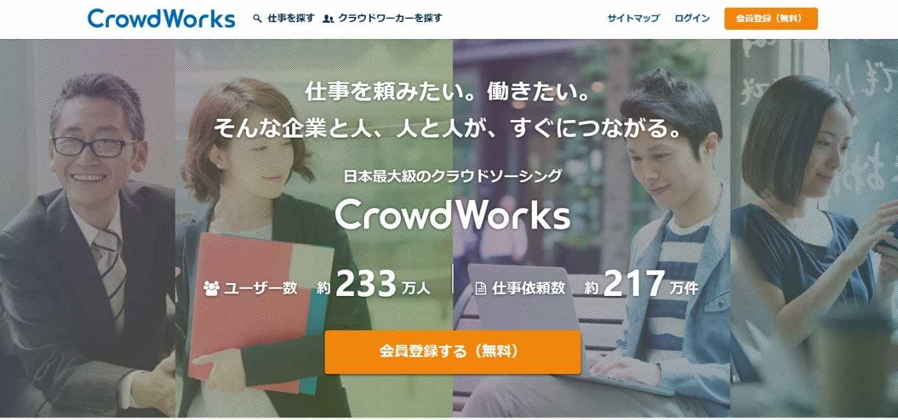
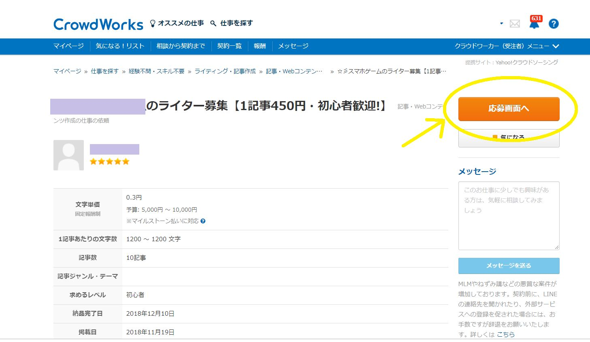
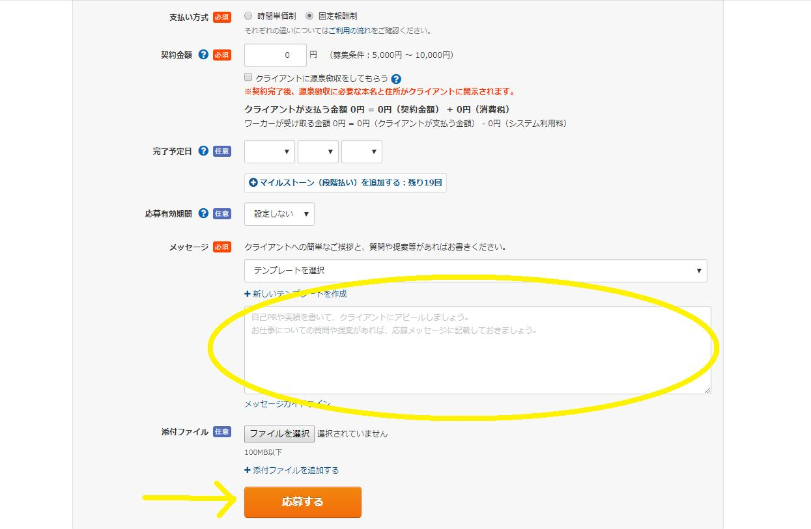
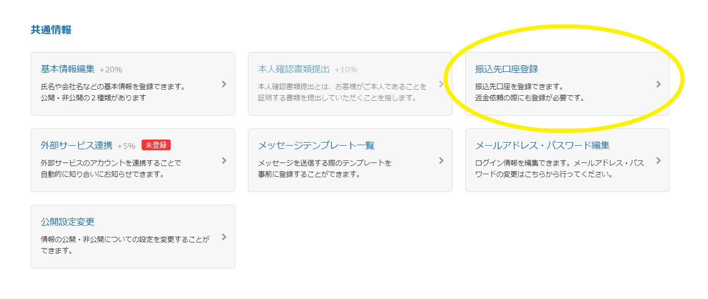
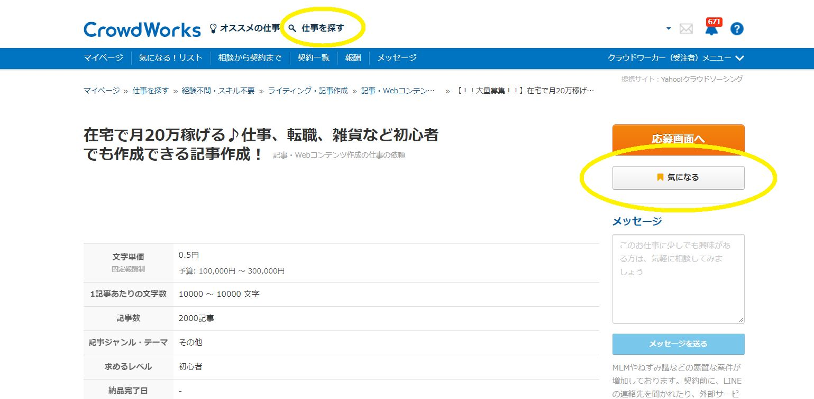
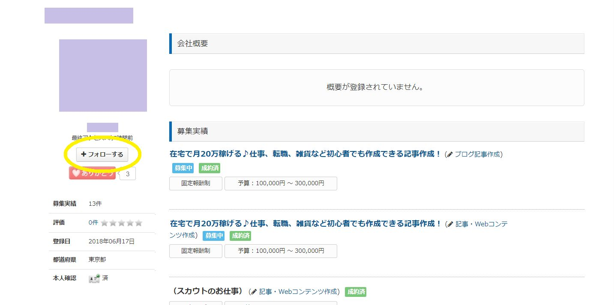
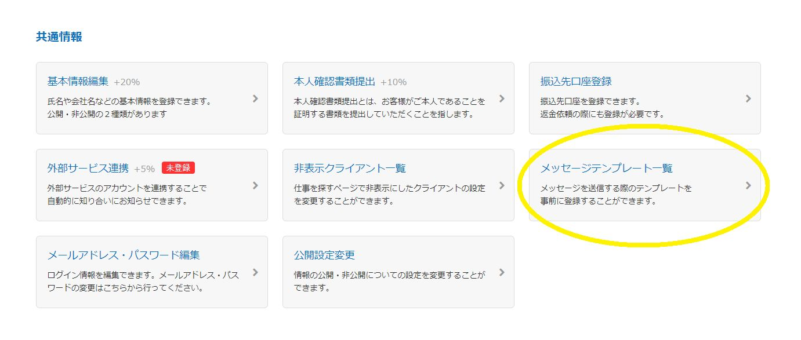
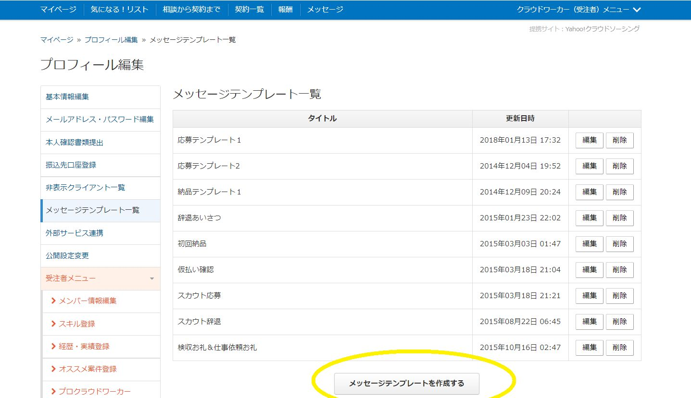
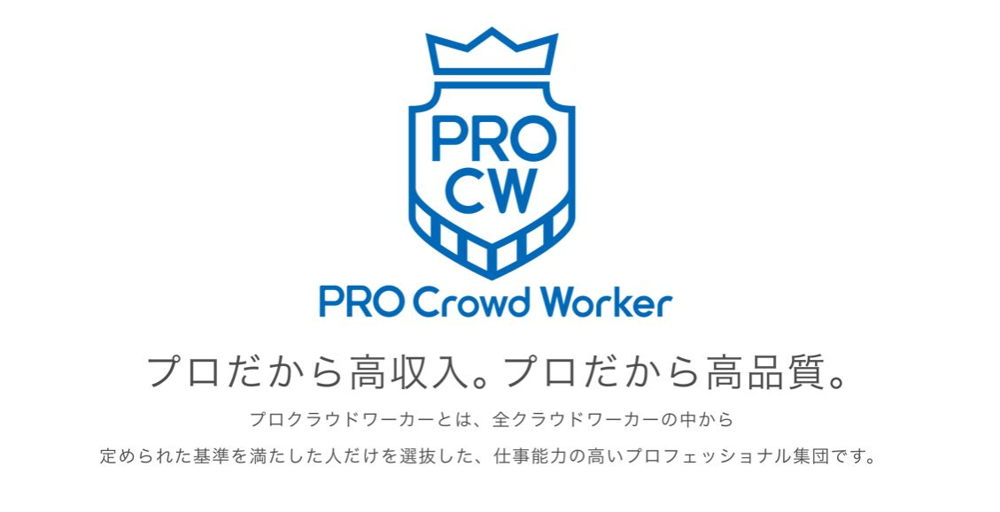
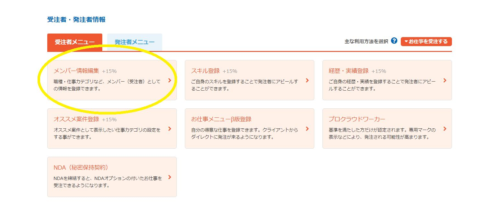

| WEBライターのためのクラウドワークス攻略法！: たった300文字の文章作成で、 私の人生が変わった！ | |
| はなたびと | |
| (2018) | |
はなたびと 著
たった300文字の文章作成から、
あなたの人生が変わるかもしれない...
私がクラウドワークスのことを知ったのは2014年のことです。当時私は結婚して海外に移住したばかりで、在宅で簡単な翻訳でもやってみようと思っていました。そのとき出会ったのが、クラウドワークスなどのクラウドソーシングという働き方です。
初めて挑戦したライティングは、たしか数百文字程度の簡単な文章作成だったと記憶しています。最初は正直言って、半信半疑でした。自分が書いた文章で、たとえ数十円でもお金がもらえるというのですから、ちょっと信じられない感じですよね。でも、実際にきちんと報酬は支払われましたし、銀行口座に入金もありました。実はこのとき、夫には「そんなネットだけのやり取りで本当に大丈夫なの？」と心配されていたくらいです。
でも、そうやって少しずつライティングの仕事をこなすうちに、クラウドソーシングというスタイルが新しい働き方として時代のトレンドになりつつあるということを知りました。
日本では少し前から、副業解禁という言葉がトレンドになってきています。副業といってもとてもたくさんの方法がありますが、特別な資格がなくてもゼロ円で始められるウェブライターは、だれにでも挑戦しやすい副業の一つだと思います。
本書では特にウェブライターとしてクラウドワークスを利用する方法のアイデアをまとめています。クラウドソーシングを介して行うウェブライターの仕事には、メリットもデメリットもありますが、上手に利用すれば、自分のライフスタイルに合わせて稼ぐことは難しくありません。しかしながら、クラウドワークスでのライティングの仕事はだれにでも始めやすい反面、効率よく稼ぐ方法を身につけていないと、なかなかうまく稼げず挫折してしまう方も少なくないようです。そのような方にアイデアを伝えたくてこの本を出版するにいたりました。
私は現在もクラウドワークスでライティングの仕事をしつつ、ブログを運営したり、このような電子書籍を書いたりしています。これもすべて、クラウドワークスで始めた数百文字のライティングから始まりました。もし、みなさんが少しでも「書く」ことが好きであれば、クラウドワークスでのライティングの先に、大きな可能性が広がっていると認識していただきたいのです。
読者の方の中には、副業でライターをはじめてみようと思っている方もいれば、専業としてプロライターを目指している方もいるでしょう。本書では基本的なクラウドワークスの使い方だけでなく、ウェブライティングで効率よく稼ぐための初歩的な考え方についても触れています。
この本を手に取っていただいたことがきっかけで、読者の方の生活がより充実したものとなることを願ってやみません。
なお、本書の内容は執筆当時のものです。クラウドワークスで仕様変更などがあった場合には、それに応じてアップデートしていく予定ではありますが、中には実際の機能やシステムに合わない部分もあるかもしれません。その旨、ご了承ください。
2018年12月 著者
Contents
2－2．ウェブライター初心者にクラウドワークスがおすすめな理由
2－4．クラウドワークスの使い方～無料会員登録から仕事受注まで
2－7．初心者ライターがクラウドワークスで効率よく稼ぐ3つのコツ
2－8．クラウドワークスでライターとして受注するときタスクとプロジェクトどっちが有利？
3－2．ライティング初心者が今すぐ文章力を上げるためにできる3つのこと
3－4．ライティングスキルを上げるために初心者がまずやるべきこと「推敲」
3－5．ライティングスキルを上げるために音読がおすすめな理由
3－6．クラウドワークスの「気になるリスト」ボタンってどう使うの？
3－8．安定収入を得るためのライティング案件の選び方‐良い案件を見極めるテクニック
3－10．プロライターとして稼ぐ―文字単価1円以上の案件を取る方法
第４章 ウェブライター収入の安定化とスキルアップ＆仕事効率化
4－2．効率よく稼ぐ人はみんなやってる、タスクとプロジェクトの使い分け
4－3．クラウドワークスから始めるノマドワーカーへの道～ノマド族って何者？
4－5．プロフィール画面を充実させよう！ライターとしてどんなことを書くべき？
4－6．締め切りに間に合わない！ライターとしての〆切管理の方法
5－1．副業ライターからプロへの道ー本業ライターとして安定して稼ぐ
5－3．クラウドワークスに慣れたらココナラでライターとして出品しよう！
そもそもウェブライターとはどんなお仕事なのか、ウェブライターという職業の概要を解説します。ここでは、副業ライターもプロライターも含めた「ウェブライティング」の基本知識について書いています。
ライターというと、ちょっとピンとこない方もいるかもしれませんが、これは英語のwriter(＝書く人)から来ています。つまり広い意味では、小説家や雑誌記者、コラム執筆者など、文章を書く人はみな「ライター」ということになります。
その中でもウェブライターは、ウェブ上に掲載する記事を書く人のことを指しています。
最近は、スマホなどの普及により、ネットサーフィンする人もずいぶん多くなりました。みなさんも普段インターネットでさまざまな記事を読んでいると思いますが、それらの文章を書くのがウェブライターの仕事です。
ウェブライターになるために、特に必要な資格などはありません。極端な話、文章が書ければだれでもできる仕事です。
雑誌や新聞などの紙媒体に記事を書くのであれば、ライター(記者)として出版社に入社するというのが、一般的かもしれません。しかし、ウェブライターは、クラウドソーシングというサービスを利用すれば、ネット上のやり取りのみで仕事を請け負うことが可能です。
クラウドソーシングとは、ネットを介して広く人材を募集するシステムのことを指しています。プロの人材を募集している案件もありますが、未経験者でもできる仕事もあり、だれでも応募することが可能です。何も特別な資格やライター経験がない人の場合、クラウドソーシングの会社を通じてライターとしての業績を積み上げるのが早道になるでしょう。クラウドソーシングでライティングの仕事を請け負うライターのことを特に「クラウドライター」といったり、「クラウドワーカー」と呼ぶこともあります。
以下、クラウドソーシングを利用してウェブライティングの仕事を行う流れについて、ざっくりと説明しておきましょう。
クラウドソーシングの会社は日本国内に数社存在していますが、基本的に無料で登録できます。仕事に応募する際も費用はかかりません。仕事を終えたあと報酬を受け取る際、手数料として15～30％差し引かれる会社が多いです。
このときの仲介手数料は会社によって異なります。また、報酬の支払いに関しても、銀行口座に現金で振込まれる会社と、ポイントとして支払われる会社とがあります。ポイントの場合、ネットショッピングに利用できたり、現金に換金することも可能です。
仕事に応募する方法もクラウドソーシングの会社によってそれぞれです。クライアントと相談、同意の上で仕事開始になるケースもありますし、いきなり記事を書いて依頼者の承認を経てすぐ報酬になるというケースもあります。
私の経験上、クライアントとの交渉の上で契約を交わして行うライティングの方が報酬は高くなる傾向が強いです。ただし、条件の良い案件はその分ライバルも多いので、応募しても必ず採用されるとは限りません。
仕事が決まったら記事を作成します。ライティングの案件次第では、単にテキスト(文章)を作成するだけでなく、画像を選定したりウェブサイトへの投稿作業を含むお仕事もあります。
このような記事作成以外の作業を含む案件は、通常は文章作成だけの仕事よりも報酬が高くなります。ただし、その分作業に時間がかかるのため、自分の仕事のスピードや得意不得意によって、どの案件が自分にとって一番効率的かを見極める必要があります。
与えられた仕事をクリアできたら、それを納品して完了となります。 クライアントが納品した成果物に納得すれば、そこで案件は完了となり、報酬の支払いが行われます。納品した成果物がクライアントの意向と合わない場合、修正依頼がくることもあります。
クラウドソーシングの会社を通しての依頼の場合、その会社によって報酬の口座振り込み日時が決められていますので、実際に報酬が振り込まれるのには少し待たなくてはいけません。銀行振り込みの際の最低支払金額も定められているので、それに足らない部分は翌月に持ち越しとなります。
クラウドソーシングを介して行うウェブライターのお仕事の流れは以上のような感じになります。とてもシンプルな流れになりますので、なんとなくイメージしていただけたのではないかと思います。
ウェブライターの仕事として、具体的にはどのような内容のものがあるのかは、クラウドソーシングに登録して仕事一覧を見ているとなんとなくわかってきます。ここでは、クラウドソーシングでよく見られるライティング案件について、分類して紹介します。
今まで使ったことのある商品や利用したことのあるサービスなどについての口コミや感想を書くお仕事です。比較的短い文章の作成が多く、特別な知識も必要ないので初心者にも取り掛かりやすい案件です。
商品やサービス以外にも、映画や本、漫画などのレビュー記事作成もあります。
指示されている元の原稿を自分独自の文章に書き替えるお仕事です。元原稿の構成を変えたり単語を入れ替えながら、内容は同じでも見た目には別記事に見えるように文章を作成します。元の原稿の内容を変えずにどれだけ新鮮味のある記事に書き直すことができるかが、ライターの腕の見せ所になります。
何か一つのテーマにしたがって、ネット検索で収集した複数の情報を元に、自分の意見や感想を交えつつ記事を執筆します。クライアントからマニュアルなどを渡されることも多く、ライター初心者でも挑戦しやすい案件が多いです。
いわゆる「キュレーションサイト」などに掲載する記事は、このような案件で納品された文章が使用されます。
海外の記事(英語が多い)をベースにして、記事を書くお仕事です。一見英語翻訳と混同しそうですが、厳密にいうと翻訳ではありません。海外の記事を参考にしながら、独自の切り口で自分のオリジナルの記事として執筆します。
逆に、クライアントが日本語で作成した記事を、外国語で翻訳して記事作成するというお仕事もあります。外国語が堪能な方は、このような案件にも挑戦できます。
得意な専門分野を持っている人や特殊な資格を持っている人は、その知識や経験をもとに記事を執筆するお仕事もあります。他のサイトにはない情報を盛り込めるので、オリジナリティが高くなり、報酬単価も比較的高くなることが多いです。
裏付けとなる数字やデータなどの資料を参照するためにネット検索も行いますが、基本的には、自分の持っている知識や経験をベースにして記事を書きます。
記事作成だけでなくそれにプラスして、画像選定やワードプレスやその他のツールによる投稿作業が含まれる案件もあります。こういった仕事は記事作成のみの案件よりも比較的報酬が高いのが通常ですが、慣れていないとその分時間もかかってしまいます。そのため、結局時給換算すると記事作成だけの方が割りが良かったということもあります。
ただし、いつか自分でサイトやブログの運営をしてみたいと考えている人にとっては、報酬をもらいながら投稿作業や画像選定のコツなどが学べるので、サイト運営のスキルを身につけるチャンスでもあります。
さらに、ブログやサイトの作成そのものを依頼するクライアントもいます。基本的な設定は依頼者が行うことがほとんどで、ライターはタイトル案や文章作成、レイアウト、画像選定、投稿作業など、複数の作業を行います。まれに、サイトやブログを丸ごと1個作成するという仕事もあります。
いずれにしても、自分の得意な分野を持っていると有利です。ライティングの仕事はとてもジャンルが多く幅広いのが特徴的で、美容や健康、ビジネス、金融、エンタメ、語学、旅行など、さまざまな分野の案件がありますので、自分の得意な分野から挑戦すると良いでしょう。
まとめ記事作成やリライトの場合、特別な分野の知識や経験がなくてもネット検索から記事を書くことができます。自分の不得手な分野であっても、このタイプの記事作成を繰り返すことで、徐々に得意な分野を増やすことも可能です。
ウェブライターの仕事に興味を持った方が気になるのはやはり収入のことだと思います。ウェブライターの月収とはどのくらいなのか、記事の報酬金額についてまとめておきます。
そもそも、記事作成の仕事で必要とされる文字数にはどのくらいのものが多いのでしょうか。
少ないものでは、100文字からという案件もあります。もちろん、報酬単価は低く、数円にしかならないケースもあります。しかし、その分作業時間は短くてすみますので、隙間時間を利用して数をこなすことも可能です。
それより少し増えて300～400文字という案件は、以前に比べると少なくなったようですが、それでも定期的に応募案件を見かけます。ただ、最近では500～600文字以上の案件が増えてきたように感じます。
最も一般的に見かける案件は、1000～1800文字以上のものです。これがウェブサイト内の1ページ当たりの最低文字数として一般的になりつつあるようです。読者としても1記事に1000文字くらいないと、読んだ気がしないというのが現実でしょう。1000～1500文字程度の記事作成は、ライター初心者にとっても比較的まとめやすいボリュームなので、積極的に取り組みたいものです。この程度の文字数の案件をサクサクこなせるようになれば、どんどん文字数の大きなものにも挑戦しやすいでしょう。
長文になると、2000～3000文字以上のライティング案件もあります。ただし2000文字以上となると、記事の段落構成や段落ごとのテーマを割り振られているケースが増えているようです。2000文字というとボリュームが多くてしんどいな、と思うかもしれませんが、段落ごとのテーマが与えれていればそれほど書きにくいものでもありません。
案件は多くありませんが、がっつり5000文字とか10000文字以上という案件もたまにあります。5000文字以上となると、ちょっとしたミニ書籍程度のボリュームになりますので、ストーリー性のある体験談などの執筆が多いような気がします。
ウェブライティングのお仕事で一般的なのは、1記事当たりの報酬単価で計算される方式です。最低限必要な文字数が決まっていてそれ以上の文字数を書いても1記事としてカウントされます。特に初心者ライターの案件の場合、ほとんどのケースがこの計算方法だと思います。この場合、指定文字数以上の記事を書いても、文字数超過して書いた分は報酬として反映されません。
一方、文字単価で報酬が計算される案件もあります。最低限何文字以上という制限はありますが、それ以上の文字数を書けばその分上乗せして報酬を受け取ることができます。
クラウドソーシングでの記事の依頼は、双方の合意によって報酬が決められます。未経験者で1文字0.5円が相場という人もいますが、現実として、クラウドワークスなどでは文字単価0.3円程度が初心者の相場だと思います。後で説明しますが、タスク形式というスタイルでは0.1円という激安の案件もあります。安すぎるきらいはありますが、これはこれでメリットがないわけではありません（詳しくは後述します）。
ある程度経験を積むと、1文字1円からの依頼もあります。ただし、報酬単価が高い案件には、画像挿入作業や投稿作業が必要なものもあるので、作業内容をよく確認してから応募するようにしましょう。
ウェブライターの月収という話になると、かなり差があります。そもそもウェブライターは副業で行っている人も多いので、副業の場合は月に数万円という方が多いのではないでしょうか。初心者のうちはどうしても報酬単価が低くなりがちで作業ペースも非効率になりますので、1～3万円程度という人も多いでしょう。慣れてくると副業でも5万円以上稼ぐことも可能ですが、あまり稼ぎすぎても税金が高くなって困るというケースもありますよね。
フルタイムでウェブライターをやっている人の場合、20～30万円以上の月収も不可能ではありません。また、経験を積んでどんどん単価の高い案件に取り組んでいけば、50万円以上稼ぐことも不可能ではないようです。ただし、高額案件の中には取材が必要なケースもあります。やはりここでも自分のライフスタイルと求めるワークスタイルによって、案件を選ぶことになります。
クラウドソーシングを利用してウェブライターをする場合、自分のライフスタイルや目標に合わせて収入を調整できるのもメリットの一つです。しっかり稼ぎたい人はフルで働くこともできますし、あまり稼ぎすぎると税金が高くなって困るという方は、自分で作業時間をコントロールすれば、目標金額内に抑えることが可能です。
クラウドソーシングは、PCやスマホを使って在宅でお仕事を受注する新しいワークスタイルですが、当然メリットばかりではありません。クラウドソーシングで働くことのデメリットについて、お話ししたいと思います。
クラウドソーシングとは、仕事を請け負いたい人と、仕事を依頼したい人をオンラインで直接つなげることにより、双方ともより利用的な取引を成立させるサービスのことです。多くの人からアイデアなどを募集して、より低コストでより高品質な成果を上げようとする、新しい仕事取引の方法です。
仕事を探す側も仕事を依頼する側も無料で登録でき、お互いが納得して交わした契約が完了した時、報酬が支払われ、そこからクラウドソーシングの会社に手数料が支払われます。
クラウドソーシングで働くことのデメリットとして、以下の4つを挙げてみました。
クラウドソーシングで働くときのデメリットとして、システム利用料が受注者負担になるケースが多いということです。金額はクラウドソーシング運営会社によって異なりますが、だいたい15～30%となっており、報酬金額からその手数料が差し引かれます。受注金額によって手数料率が変動する会社もあり、そこに消費税もプラスされるので最初のうちは計算方法が分かりにくいかもしれません。
システム手数料を高いか安いかと考えるのはその人次第ですが、豊富な掲載案件の中からやりたいお仕事を選べる・営業しなくても良い・打ち合わせにかかる手間や交通費の心配がない・・・といったことを考慮して、「快適にお仕事をするために必要なシステム利用料」だと納得できるかどうかですね。
内容にもよりますが、一部のプロ向けのお仕事を除いて、クラウドソーシングの仕事単価は比較的低くなる傾向があります。発注する側のクライアントにとってはメリットですが、受注するワーカーにとってはデメリットです。お仕事の中でも、専門的なスキルを必要としない文章作成・データ入力などは、特に報酬単価が低いといわれています。
仕事の募集は毎日新しいものが更新されますので、たくさんの案件を見ていればなんとなく相場が分かってきます。中には思わず二度見してしまうような、とんでもない低単価の募集も紛れていますので、仕事を探すときは注意して選びましょう。
クラウドソーシングで働くということは、どこかの会社に雇われて仕事をするわけではありません。その収入は完全出来高制ということになり、仕事をしなければ収入はありません。
会社に所属して働くなら、病気の時にはそれなりの福利厚生を得ることもできますし、ある範囲内でお給料も支給されるでしょう。しかし、クラウドソーシングは違います。
たとえクライアントと契約していても、その仕事を完了できないと1円も入ってきませんし、自分の体調不良で仕事ができなくなると、とたんに収入はゼロになります。
クラウドソーシングは、オンライン上で応募から契約・報酬の受け取りまですべて完結する、まったく新しいワークスタイルです。一見気楽なようにも思えますが、クライアントと対面しないことが、逆にデメリットになってしまう場合もあります。信頼できるクライアントかどうか見抜くのが難しいケースもあり、受注者と発注者の間でのトラブルがないわけではありません。契約後、思っていた作業内容と異なっていたり、音信不通になるといったトラブルもよく聞かれます。
当事者間で解決できない場合は状況に応じてクラウドソーシング事務局へ相談する必要がありますが、問題のあるクライアントに当たらないためにも、仕事を選ぶときは案件詳細と同時にクライアント情報をしっかり確認するようにしたいですね。
クラウドソーシングを利用してウェブライターとして働くことのデメリットをまとめてみました。以上のようなデメリットはあるものの、もちろんさまざまなメリットもあります。最後にメリットについても簡単に触れておきます。
まず、クラウドソーシングで扱われている募集案件は豊富にあることです。ちょっとしたスキマ時間でできるようなカンタンな仕事から、プロ向けの仕事まで幅広い案件がありますので、自分のスキルを最大限に発揮できるお仕事を見つけやすいのです。
時間的な拘束がないのも嬉しい点です。早朝でも深夜でも仕事ができ、仕事の量も自分の都合に合わせて調整することができます。また、在宅で仕事を受注することができるので、住んでいる場所に関係なく作業をすることができます。毎日オフィスに出勤するわずらわしさもありません。電源・Wi－Fi環境が整っている場所であれば、どこでもそこが仕事場になります。
このように、確かにクラウドソーシングにはいくつかのデメリットがありますが、デメリットをカバーできるだけの十分な魅力があるのではないでしょうか。
国内クラウドソーシングの中でも最大級であるクラウドワークスの紹介と基本的な使い方を説明します。ウェブライターとして私の経験に基づき、初心者向けのアイデアを提案します。
クラウドソーシングの会社は国内にもいくつかありますが、私がメインで利用しているのがクラウドワークスです。
クラウドワークスは2011年設立、総合型クラウドソーシングサービスを提供しています。2012年にマザーズ上場し、岐阜県や福島県南相馬市、宮崎県日南市など、地方自治体とも提携し地域エンジニアやクリエイターを中心とする地方都市の雇用促進への試みにも取り組んでいます。
クラウドワークスでは、仕事を受注したい人と発注したい人とをオンラインで結び付け、仕事の契約、納品、支払いまですべてオンライン上で完結できるサービスを利用することができます。扱っている業種は幅広く、在宅ワーカーにとっては非常にメリットの大きな会社です。
クラウドワークスは国内最大級というだけあって、仕事の種類や募集数がとっても充実しています。
ライティングの仕事だけでなく、デザイン・ホームページ制作・アプリ開発といったプロ向けのお仕事から、データ入力・ネーミング・アンケートなど、幅広いお仕事があります。
クラウドワークスで扱われている文章作成の仕事は、テーマもさまざまで募集数も圧倒的に多いです。主婦のワーカーさんにも大人気の案件で、在宅ワークが未経験という方にとっても始めやすいお仕事です。
クラウドワークスのお仕事には、「プロジェクト」「タスク」「コンペ」の3つの形式があります。お仕事を始める前に、それぞれの特徴を確認しておきましょう。
プロジェクト形式では、クライアント（依頼先）が募集している仕事にワーカーが応募し、双方が金額・納期など条件を提示し合意した後、1対1で契約を結びます。クライアントが「スカウト」という形で特定のワーカーにメッセージを送り、条件合意後契約を結ぶというケースもあります。
タスク形式やコンペ形式に比べると、受注までのハードルが高いと感じるかもしれません。その分、達成感が得られるお仕事も数多く募集されています。
プロジェクト形式の報酬の支払い方法は、時給制と固定報酬制の2種類があります。
時給制は、契約時に1時間当たりの報酬を決めて、作業した時間に対して報酬が支払われます。
専用のタイムカードアプリ「CWタイムシート」を使って作業をし、勤務時間を記録します。タイムシートには、キータッチとクリックの回数のほか、ランダムで1時間に複数回画面のスクリーンショットが記録されます。
固定報酬制は、契約時に成果物に対する報酬額を決めて、依頼された成果物を納品することで報酬が支払われます。
プロジェクト形式のお仕事は、仕事内容や報酬についてクライアントとコミュニケーションをとりながら行う必要があります。ほとんどのケースではクライアントの連絡はネット上のメッセージを使って行われますが、まれにスカイプなどでのミーティングが必要なケースもあります。
ある程度のビジネススキルが求められますので、在宅ワーク未経験の方は、いきなりプロジェクト形式から始めるよりもタスク形式のお仕事から始めるのがおすすめです。
タスク形式のお仕事は、特別なスキルを必要としない簡単なお仕事が多く、300字程度の文章作成・データ入力・アンケートなど、簡単な作業が多いです。
まずはどういったお仕事の募集があるのかチェックして、興味のある仕事を見つけたら早速作業を開始してみましょう。それぞれのタスク案件には募集件数の上限がありますので、それに達したら自動的に募集終了となります。早い者勝ち的な要素がありますが、いい加減な記事作成だと非承認となることもあります。
また、タスク形式の場合、作業時間は1時間と制限されています。一度作業を始めたら、指定時間内に作業を完了させなくてはいけません(途中でキャンセルすることも可能です)。
作業完了後、クライアントがその作業内容を承認すると報酬が支払われます。タスク形式は、プロジェクト形式やコンペ形式と違い、作業開始前にクライアントとコンタクトをとる必要がないため、気軽なのが魅力です。ちょっとした空き時間にサクッとお小遣い稼ぎすることも可能で、忙しいサラリーマンや主婦のワーカーさんにも人気です。
コンペ形式のお仕事では、クライアントが募集している内容に対して複数人が提案（応募）し、採用された場合にのみ報酬が支払われます。コンペ形式のお仕事には、ロゴ作成・ホームページのデザイン・チラシ作成などプロ向けのお仕事のほか、企業やサービスのネーミング・キャッチコピーを募集するお仕事もあります。
どんなに時間をかけても、採用されなければ報酬は0円になってしまうので注意が必要です。
前章ではクラウドワークスで扱われている仕事の種類について述べました。ウェブライターとして、在宅で仕事を行いたいという場合、初心者にもおすすめできるのがクラウドワークスです。
ウェブライターを目指す初心者に、クラウドワークスがおすすめな具体的理由についてまとめておきます。
クラウドワークスは、業界最大手の一社ですので、クライアントも仕事の案件も多いです。ウェブライターとして登録できるクラウドソーシングの会社は他にもあり、私も複数の会社に登録していますが、その中でも群を抜いて案件が多いと感じるのがクラウドワークスです。
ライティング案件の種類も多様なので、自分に合ったものを探しやすいというメリットがあります。
ほかのクラウドソーシングの会社や記事作成サイトでも同じですが、登録には費用がかかりません。一度登録すれば、自分の気になる案件にすぐ応募できます。
クラウドワークスで扱われている案件には、どのようなものがあるのか検索するためにも、無料登録だけでもすませておきましょう。
クラウドワークス以外の記事作成サイトでは、記事作成の報酬がポイントで支払われることもあります。たまったポイントは換金することが可能ですが、会社によってポイントの換金レートが異なったり、換金に必要な最低ポイントなどがあったりと、ややわずらわしい点もあります。
クラウドワークスは報酬は現金で支払われるので、シンプルで分かりやすいというメリットがあります。
クラウドワークスには、クライアントとワーカーがお互いの評価をするシステムがあります(プロジェクト形式の場合)。仕事を完了して良い評価を積み重ねていけば、自分のキャリアとして反映されます。
クライアントから受けた評価は自分のプロフォール画面に表示されますので、その評価が高ければ他のクライアントの案件にも採用されやすくなりますし、向こうからスカウトが来ることもあります。
クラウドワークスには、プロジェクト、タスク、コンペといった、複数の仕事形式があります。それぞれにメリットとデメリットがありますが、自分に向いている仕事形式を選んで作業を行うことができます。
これは好みもあると思いますが、クラウドワークスの操作画面は直感的に操作でき、初心者でも使いやすいと思います。
クラウドワークスは、スマホアプリもあります。スマホアプリでできる機能はPC画面でできることとやや異なりますが、それでもアプリをダウンロードしておけば、仕事の進行状況やクライアントからのメッセージなどをいち早くチェックできます。
ライターとして経験がない人にとって、これが最も重要なことかもしれません。クラウドワークスの案件には、初心者やライター未経験の人でも応募できるものが多いです。その分報酬単価は安くなりますが、ここで経験を積めば、報酬の良い案件にも採用されやすくなります。
私も、最初のライターとしての活動はクラウドワークスから始めました。今では、複数のクラウドソーシングの会社に登録していますが、未だにメインとしてはクラウドワークスを利用しています。
初心者でも少し経験がある人でも、まずはクラウドワークスに無料登録しておきましょう。
クラウドワークスが初心者ライターにもおすすめな理由を説明しました。でも、それでも文章なんて書いたことのない自分にライターの仕事ができるかしら、と思っている方もいるかもしれません。
本章では、クラウドワークスの文章作成のお仕事について、もう少し掘り下げてお話ししたいと思います。
文章作成は「難しそう」と考えている方もいると思いますが、クラウドワークスで圧倒的に募集数が多いのが、実は文章作成のお仕事です。
クラウドワークスの大きな魅力は、与えられたお仕事をこなすような従来の働き方ではなく、「自分からお仕事を探して選ぶ」働き方ができることです。
最初は文章作成に自信がなくても問題ありません。自分が苦手なテーマをわざわざ選ぶ必要はないのです。自分が「書ける・書きたい」と思ったことを書いていけばよいのですから。
クラウドワークスで募集されているライティング案件では、文章作成のテーマやジャンルが豊富です。毎日新着のお仕事の募集がどんどん入ってくるので、あなたが好きなこと・経験したこと・得意なことなど、興味のあるテーマがきっと見つかるでしょう。
ただし、文章の書き方については、ちょっと注意が必要です。募集ページには「です・ます調で」「気軽な口調で」「ポジティブな明るい内容で」「写真を添付」など、クライアント（お仕事の依頼先）がお仕事の詳細を記載しています。また、注意点・禁止事項も記載されているので、あわせてよく目を通しておきましょう。あとは、その指示に従って文章を書き上げるだけです。
初心者の方は、まずタスク形式でお仕事を探すのがオススメです。タスク形式で募集している文章作成のお仕事は、特別なスキルを必要としない、簡単なお仕事が多いのが特徴です。200字程度の短文の案件も多く、待ち時間などのスキマ時間に気軽に作業することができます。
クライアントと交渉をする必要もなく、すぐ作業を開始できるのもタスク形式の嬉しいところです。作業完了後、作成した記事がクライアントに承認されたら報酬が支払われます。
クラウドワークスで募集されている文章作成のお仕事には「未経験者歓迎！」「初心者でもOK！」「簡単！」という案件も非常に多いです。誰でも気軽に始めることができるので、ぜひ一度思い切って挑戦してみてください。たとえ最初は不安に感じていても、実際に行動してみれば本当に簡単だということが分かると思いますよ。
在宅でカンタンな文章を書くだけでもお小遣い稼ぎができる、クラウドワークス。ここからは、いよいよクラウドワークスの使い方を具体的に紹介していきます。
まずは、クラウドワークスの無料会員登録から、仕事を請け負うまでの流れを説明します。
まず、クラウドワークスの公式サイトへアクセスしましょう。
クラウドワークス https://crowdworks.jp/

「会員登録をする(無料)」をクリックし、クラウドワークスで使用するあなたのメールアドレスを入力します。
登録後、クラウドワークスから届くメールに記載されているURLをクリックして、必要事項を入力して会員登録を行います。
プロジェクト形式（固定報酬制）の場合として説明します。
クラウドワークスにログインし、画面上部に表示されている「仕事を探す」をクリックして、まずはどういった仕事の募集があるのかチェックしてみましょう。
仕事はカテゴリーごとに細かく分類されています。24時間、新しい案件が次々と掲載されますので、毎日新着情報をチェックする習慣をつけると良いでしょう。

自分のスキルに合った条件の仕事が見つかったら、実際に応募してみましょう。
募集ページにあるオレンジの「応募画面へ」ボタンを押して、メッセージ欄にクライアントへのメッセージを入力します。

自己紹介・金額や納期の希望・興味を持った理由・スキルや意気込みなどを盛り込んで応募メッセージを作成します。自分らしさが伝わるように、またクライアントに興味を持ってもらえるような内容にしましょう。
誤字脱字がないか確認できたら、メッセージ欄の下にあるオレンジの「応募する」ボタンを押して、クライアントからの連絡を待ちます。
引き続き、プロジェクト形式（固定報酬制）の場合で説明します。
クライアント・ワーカー双方が条件合意した後に、正式に契約を結び仕事がスタートします。
クラウドワークスは、原則として仮払い方式を採用しています。双方が契約に同意したら、まずクライアントがクラウドワークス側に報酬の仮払いを行います。こうすることで、仕事が完了した後のワーカーへの支払いが保証されるのです。
ですので、ワーカーはクライアントの仮払いを確認してから仕事を開始するようにします。
契約後は納期にあわせて計画的にお仕事を進めていきましょう。分からないことがあればその都度クライアントへ連絡し、円滑なコミュニケーションを心がけるようにします。
記事を納品後、クライアントによる検収が完了したら報酬が確定します。
この章では、クラウドワークスで報酬を受け取る方法や注意点について、お話ししたいと思います。
クラウドワークスで報酬を受け取るためには、銀行口座を登録する必要があります。銀行口座は、本人名義の日本の銀行口座のみ登録が可能です。
確定した報酬は、あらかじめ設定している出金方式に基づいて「15日締め⇒月末振り込み」「月末締め⇒翌月15日振り込み」として手続きが行われます。
● 通常の随時出金方式（締め日時点の未出金報酬額が1,000円以上なら、半月後に振り込み）
● 50,000円以上出金方式（締め日時点の未出金報酬額が50,000円以上なら、半月後に振込）
● キャリーオーバー方式（未出金の報酬額に関係なく、自動的に出金が繰り延べ）
といった方式が用意されています。
※初期設定では、随時出金方式に設定されています。出金方式は、マイページの「報酬」の画面から、何度でも変更することができます。
振込先銀行口座を登録する手続きはカンタンです。

以上で、手続きは完了です。
銀行口座は、本人名義の日本の銀行口座ならどこでもOKですが、銀行によって振込手数料が異なります。楽天銀行なら税込み100円ですが、それ以外の銀行は税込み500円の手数料がかかります。
クラウドワークスでの報酬は、設定されている出金方式に基づき、
毎月15日締め・月末振込、もしくは月末締め・翌月15日振込となります。振込予定日が銀行休業日の場合は前日に振込まれます。
銀行振込手数料を安くおさえたいなら、楽天銀行が断然おトクです。出金方式を「50,000円以上出金方式」「キャリーオーバー方式」にして、ある程度金額がたまってからまとめて振り込まれるようにすると、さらに手数料を抑えることができます。
せっかくの報酬ですから、できるだけ減らさず受け取るようにしたいですね。
クラウドワークスで仕事を受注するときには、報酬金額に応じてシステム利用料がかかります。
クラウドワークスでは、仕事を発注するクライアントはシステム利用料無料（有料オプションを除く）です。一方ワーカーは、仕事を受注して契約が完了し報酬が支払われるときに、報酬額からシステム利用料が差し引かれます。
クラウドワークスのシステム利用料は、ワーカーが受け取る報酬金額の5％～20%となり、契約金額によって計算方法が変わってきます。ただし、タスク形式のお仕事は一律20％の手数料を支払うことになります。
クラウドワークスのシステム利用料は以下のような仕組みになっています。
● 20万円を超えた部分の金額に対して⇒5%
● 10万円超～20万円以下の部分の金額に対して⇒10%
● 10万円以下の部分の金額に対して⇒20%
ちょっと分かりづらいので、例を挙げて説明します。
例）契約金額（税込）が25万円の場合の、システム利用料の計算方法。
20万円を超えた部分の金額に対して⇒2,500円（5%）
10万円超～20万円以下の部分の金額に対して⇒1万円（10%）
10万円以下の部分の金額に対して⇒2万円（20%）
つまりこの場合、32,500円がシステム利用料として、報酬金額から差し引かれることになります。
クラウドワークスのシステム利用料は、お仕事の単価によって変わります。ライター初心者の場合、10万円を超えるライティングの仕事はあまり多くありませんが、報酬金額が大きい方が手数料は割安になるということは、覚えておくとよいでしょう。
クラウドワークスにライター登録したら、さっそく仕事に応募してみましょう。数件ライティングを経験すれば自分がライターに向いているのかどうかも分かってきます。
少しライティング経験を積んだら、今度は少しでも効率よく稼げるようになりたいですよね。この章では、クラウドワークスに登録したばかりの人でもすぐにできる、効率よく稼ぐ方法のアイデアを紹介します。
まず一つ目のコツは、自分にとって書きやすいと思える内容の記事作成からチャレンジしてみるということです。全く知識がない分野の文章作成のお仕事を選んだ場合、ゼロから情報収集する必要があります。これって、思っている以上に時間がかかるものです。また、全く興味のない分野もあまりおすすめできません。
ライティングの仕事は文字をタイピングするだけではありません。ネットなどで情報を収集し記事全体の構成を考え記事を作成します。効率よく稼ぐためには、テンポよく進行してスピーディーに仕上げること、スピード感が大切なのです。
クラウドワークスで応募されているライティング案件は非常に多いので、わざわざ苦手な分野を選ぶ必要はありません。自分が好きなこと、得意なこと、興味があることに関連した仕事を選びましょう。
もちろん、ライティングの幅を広げるために、あえて知らない分野や苦手なジャンルに挑戦するのもOKです。その場合は効率よく稼ぐということは考えないで、知識を存分に吸収してスキルアップにつなげるつもりでトライしてみるとよいでしょう。また、特殊な分野よりも、健康・美容・恋愛・医療・アダルトなど、変わらず需要があるような分野を選ぶと後々の仕事にも活かしやすいと思います。
クラウドワークスだけでなく、すべてのクラウドソーシングで時々指摘されるのが、報酬単価の低さです。中でもとくに単価が低いといわれているのが、残念ながらライティングのお仕事です。
募集ページを見れば分かりますが、１文字0.1円なんていう、とんでもない案件もよく見かけます。さきほどもいいましたが、文章作成のお仕事はタイピングだけではありません。情報を検索収集して記事の構成を考える作業もプラスされます。作業を行ったあと、時給で換算してみると、びっくりするくらい生産性が低いことも少なくありません。
だからこそ、どうしたら効率よく稼げるのかを考え工夫することが必要でしょう。
まずライティングの仕事を探すときは、1文字何円なのか意識して選ぶようにします。あまりにも文字単価が低いものは取らないようにしたいですね。
でも、かといって、ライター経験もないのにいきなり単価の高い案件に応募してもなかなか採用されないものです。ライター初心者のうちはどの程度の単価の案件を選べばいいのか迷うところですが、一つの目安として1文字0.3円程度の案件(1000文字300円)から始めてみるのが現実的かなと思います。
もう一つ、ライター初心者が仕事に応募するときに気を付けたいのは、仕事の内容をきちんと確認してから契約を交わすということです。ライティング案件として応募が出ているものでも、応募要項をよく読んでみると、文章作成だけでなく、画像選定や投稿ツールでの投稿作業も含まれているものがあります。その分報酬が上乗せされているのであればいいのですが、このような案件はテキスト作成以外の作業にも時間がかかりますので、その分1本の記事を納品するまでに必要な時間が異なります。そうなると当然時給換算した時の金額も変わってきますよね。
また、案件によっては、文章以外の作業のことが募集要項にはっきりと記載されていないことがあります。最悪の場合、契約を交わしてマニュアルを見た時に画像選定や文字修飾も必要な仕事だったとわかることがあります(納得できない場合は、契約締結後でもキャンセル可能です)。
ですので一番良いのは、応募メッセージを送るときに仕事の内容や納品方法を細かく確認しておくことです。そうすることで、お互い誤解なく契約でき、スムーズに仕事が進められるはずです。
クラウドワークスでは、タスク、プロジェクト、コンペという具合に、3つの仕事形式があると先述しました。この中で、ライティング案件が多いのはタスクとプロジェクトになります。
タスクとプロジェクト、最終的にどちらがいいのか選ぶのはそのライターさん次第ということになりますが、2つの形式にはどちらもメリットとデメリットがありますので、それについてまとめておきます。
まず、2つの形式の違いを簡単に説明しておきます。
タスクは一度に多くの登録者に向かって作業案件を公開する形で募集します。ワーカーは仕事一覧で気になる仕事を見つけたら、すぐに作業を開始することができます。ライターとして記事を書くときにはその編集エディタに直接書き込みますが、作業時間が1時間と決められているので、その時間内に完了しなくてはいけません。記事作成を終えたら送信し、それがクライアントに承認されればすぐに報酬発生となります。
一方プロジェクト形式では、依頼主と1対1で契約を交わしてから正式に仕事開始となります。応募しても採用されないこともありますし、契約の条件に従って記事を納品した後も、クライアントから修正などの指示が出ることもあります。最終的にクライアントの検収完了となれば報酬が確定します。
ライターとして仕事をする場合、タスク形式とプロジェクト形式のどっちで仕事をとる方がいいのか、迷うこともあるかもしれません。どちらがよいのかというのは、ライターそれぞれのライフスタイルやスキル、目標によって違ってきます。
まずは、タスクとプロジェクト、それぞれのメリットとデメリットを確認しておきましょう。
タスクの特徴は、作業を実際にしてから報酬発生までの時間が短いことです。タスク形式では、応募要項を見てやってみたい仕事があれば即挑戦することが可能です。極端な話、そのサイトに登録したその直後に作業を行い、即報酬が発生することもあります。
プロジェクト形式の場合、クライアントと1対1で契約をしてから仕事開始となりますので、契約前も契約した後も幾たびかのメッセージやり取りが必要になります。その点、タスクは気に入った案件があれば即作業を開始することができるので、圧倒的にスピーディです。
また、支払いに関しては、タスク作業は発注者が設定する締切り日から2週間以内に承認か非承認かを判断しなくてはいけないことになっています。タスク発注日から〆切日までの最大日数は14日間ですので、プラス2週間で最大28日間のタイムラグがあるということになりますが、通常はもっと早く承認(もしくは非承認)されることがほとんどです。
このように、タスクは作業を始めるのも速いですし、承認→報酬確定までの期間も短いということになります。プロジェクト形式のように、記事を納品した後で修正や加筆などの指示が入ることもありません。ただし非承認になってしまうと、たとえ作業をした後でも報酬は支払われません。
また、タスクでは文字数が比較的少ない案件が多いです。3,000文字以上のものもありますが少数派で、短いものだと100文字くらいの案件もあります。このため、ライター初心者や隙間時間を使って作業をしたい人にはピッタリの仕事形式です。
タスク形式のデメリットは、比較的作業単価が安いことです。文字単価0.1以下のものがほとんどで、タスクで稼ごうと思うとかなりの件数をこなす必要があります。
もちろん、中にはビックリするほどの単価が高い案件もあります。文字単価1円以上のタスクもないわけではありません。しかし、そういう条件の良いタスクがいつもあるとは限りませんし、人気があるのですぐに応募件数満了になってしまいます。このため、少しでも条件の良いタスクを行いたい人は、マメに応募案件をチェックしておくか、第3章の後半で紹介する「フォロー機能」を活用するとよいでしょう。
タスクでは記事を書いても承認されないこともあります。その場合、なんらかの理由があって非承認となるわけですが、報酬は発生しません。タスクで作業をした案件のうち、どのくらいの割合で承認されたかは「承認率」として反映され、自分の業績となります。その一方で、プロジェクトのように契約完了したクライアントからの評価やレビューがつかないため、タスク作業ばかりに集中してしまうとウェブライターとしてキャリアアップしにくいというデメリットもあります。
プロジェクト形式での記事作成は、一般的にタスクよりも記事単価(文字単価)の高い案件が多いです。もちろん例外もありますが、プロジェクト形式でのお仕事は継続依頼に結び付くこともあり、契約更新するごとに報酬単価を上げていくことも不可能ではありません。
また、タスクは単発のお仕事になりますので、たとえ文字単価はよくても案件ごとの額面は小さくなりがちです。その点プロジェクト形式では、１契約当たりの記事数が多い傾向にあるので、案件当たりの報酬額面はタスクに比べるとずっと高くなります。
クライアントからのフィードバックや評価がつきやすいのもプロジェクトのメリットです。プロジェクト形式を終えるたびにクライアントからの評価が記入されるので、良い評価を積み重ねていくことでライターとしてキャリアアップすることができます。
クライアントからの評価は、プロフィールページに表示され、次の仕事に応募した時にクライアントが見て参考にするものです。ですから、良い評価を積み重ねていくことで、応募した案件に採用されやすくなりますし、クライアントからスカウトが来ることもあります。
最初は記事単価300円の案件しか採用されなくても、少しずつプロジェクト形式で実績をつけることにより、文字単価1円以上の案件も採用されやすくなるはずです。
プロジェクト形式で仕事を完了させると、その結果にクライアントが満足した場合は、継続して仕事の依頼があることもあります。このように定期的な仕事を発注してくれるクライアントが複数いると、安定して収入を得ることが可能になります。
また、プロジェクト形式の案件には、最初から定期的に仕事をしてくれるライターの募集もあります。繰り返しになりますが、タスクは単発の仕事になりますので、定期的な仕事を探すならプロジェクト形式を利用する必要があります。
一方、プロジェクト形式のデメリットは、1案件当たりの仕事に関する時間が長くなってしまうことです。応募要項をみて、応募メッセージを送ってから発注者側の反応を待って仕事条件の交渉、契約となります。
ところが、発注者もライターも人間ですから、24時間メッセージに返信できるわけではありません。発注者によっては平日のみメッセージをチェックする人や、週末や深夜に副業としてライティング発注を行っている人もいます。応募メッセージを送ったからといってすぐに返信がくるわけではないのです。
また、応募から採用までの間に、テストライティングが行われることもあります。発注者は、テストライティングを行ってその成果物を見てからそのライターに仕事を依頼するかどうかを決定します。
このとき、採用されればそのテストライティングの分も合わせて報酬を支払ってもらえることがほとんどです。しかし、テストライティングを書けば必ず採用されるわけではありません。ときには、「今回は残念ながら...」というメッセージがくることもあります。不幸にも採用されなかった場合は、メッセージのやりとりやテストライティング作成の時間は全くの無駄になってしまいます。
また、採用となっても、さらにそこから仕事の説明やマニュアルによる指導があり、ようやく記事作成開始となるケースもあります。
1契約当たりで必要な記事数も案件によって異なります。5本で完了ということもあれば30本で完成ということもあるのです。記事30本というと、1日1本おさめても30日かかります。すべての記事を納品して、その検収が終わってはじめて報酬が支払われますが、記事納品後にクライアントから修正指示が来ることもあり、そうなるとまた別に時間がかかってしまいます。納めた成果物を発注者が検収して受領しない限り、仕事は終了しません。
タスクとプロジェクトの特徴が確認できたと思います。では、ライター初心者にとっては、どちらのスタイルがおすすめなのでしょうか。
ライター経験が全くない状態の人は、タスクから挑戦するのが賢明かもしれません。未経験のライターがプロジェクト案件に応募しても、なかなかすんなりと採用されないこともあるためです。タスク案件に慣れてきたら少しずつプロジェクト案件にも応募してみるのがよいでしょう。実際に両方のスタイルを試してみれば、どちらが自分に向いているか分かると思います。
クラウドワークスを利用してどんなふうに稼ぎたいのかによっても、どちらのスタイルを選ぶべきかが変わってきます。あくまでも隙間時間にサクッと出来る作業の方がいいという方はタスク中心で取り組むとよいでしょうし、プロライターとしてしっかり稼ぎたいという方は、プロジェクトをメインに自分の業績を積み上げていくことも必要です。
なお、仕事の効率化という観点からは、一歩進んだタスクとプロジェクトの使い分けについて第4章で紹介しています。
クラウドワークスで仕事を請け負うとき、特に初めての人はいろいろと不安を感じることもあると思います。ネット上のやり取りですべてが完了しますのでやり取りがスピーディですが、その反面、顔の見えない相手を信頼していいのか心配になることもあります。
実際に、クラウドワークスで仕事を受注して、報酬が未払いのままというトラブルもゼロではありません。
ここでは、クラウドワークスのプロジェクト形式で仕事を受注する際、報酬未払いなどのトラブルを防ぐために気をつけておきたいことを紹介します。
プロジェクト形式で仕事を請け負う際、仕事に応募して採用されれば契約を交わして、仕事を開始することになります。仕事に応募するときに気をつけたいのは、仕事の内容や詳細をきちんと確認することです。
採用されたものの、実際に仕事に取り掛かったら思っていた内容と違っていた、ということでは、仕事を完了するのが難しくなりますし、お互い気持ちよく仕事ができません。最悪の場合、契約途中キャンセルということになると、時間の無駄になってしまいます。
応募要項に詳細がきちんと明記されていない場合は、応募前にクライアントに問い合わせて確認するようにしましょう。クライアントに直接メッセージを送ることも可能です。
ライティングの場合、写真挿入が必要かどうか、納品方法、納期などは最低限確認しておきたいですね。
クラウドワークスのプロジェクト形式で仕事を行う場合、通常は、契約締結の後クライアントの仮払いが行われます。仮払いは、クライアントがいったん報酬金をクラウドワークスの方に預けるシステムです。そして、仕事が完了した後、クラウドワークスから仕事受注者(ライター)に報酬が支払われることになります。
つまり、クライアントが報酬金をクラウドワークスに担保することで、受注者は安心して仕事に取り掛かることができるのです。
ですから、クライアントとの契約が完了したら、必ず仮払いを待って仕事を開始するようにしましょう。
ただし、仕事の案件によっては、契約前にテスト記事の提出を求められることがあります。クライアントが新規のライターを採用する場合は、ライターからテストライティングを提出してもらい、それで採否を決めることが多いのです。このようなケースでは、採否決定後のテスト記事の取り扱い方について確認してから取り掛かると安心ですね。
上にも書きましたが、クラウドワークスで報酬金をいったん担保することで、仕事終了後にきちんと報酬が支払われることが保証されます。この点が、クラウドワークスなどのクラウドソーシングを利用する大きなメリットといってよいでしょう。このため、クラウドワークス以外のところでは仕事を引き受けないことが、トラブル回避になります。
クライアントによっては、メールやその他コミュニケーションツールを通じて、直接受注者に仕事を打診してくる人がいます。これを引き受けるかどうかは最終的には受注者の判断ですが、それで万が一報酬金の未払いとなっても、それはそのライターの責任になります。
また、クラウドワークスでは受注者と発注者の直接取引を禁止していますので、こういった行為は利用規約違反になります。
ウェブライターの仕事を少し経験したら、そろそろ初級者を卒業したいものです。この章ではウェブライター中級者以上の方がより効率よく稼ぐための、クラウドワークス利用法のアイデアを紹介します。
クラウドソーシングのサイトにウェブライターとして登録しライティングの仕事を少し経験したら、そろそろ報酬単価の高めな案件にも応募したいものです。ところが、少し条件のいい案件はライバルが多く、なかなか採用につながらないと悩む方もいるでしょう。
そんな時、どうすれば取りたい仕事が取れるのでしょうか。
ウェブライターになるには特別な資格は必要ないとはいえ、やはり経験重視の世界でもあります。文章作成に自信のある人でも、ライター経験が少ない場合、どうしても採用されにくくなります。
どんな仕事にもいえることですが、特に面接も何もないクラウドソーシングですから、依頼主としても信用できる経験豊富なライターさんに依頼したいと考えるのは想像できますよね。
報酬単価が高いものや条件の良い案件は、セミプロに近いライターの方からの応募も多いものです。ライバルが多いということですので、経験の浅い人が採用されるチャンスは小さくなってしまいます。
もし、あなたが駆け出しのライターなら、まずはライターとしての経験を積むことから始めてみましょう。
記事単価の低いものであれば、ライバルも少ないので採用される確率が高くなります。また、仕事の中には、募集要項に「未経験者歓迎」と明記されているものもありますので、これらの案件を狙うのもおすすめです。
すでに少しでもライターとして仕事を経験しているのなら、または、ライティングに自信がある場合、仕事に応募する際にサンプル記事として、今までに書いた記事ファイルを添付してみてはどうでしょうか。クライアントがライターを選ぶとき、やはりその文章力は重要な要素です。応募メッセージとともにサンプル記事を添付すれば、それを参考にして採否を決めてもらうことができまので、何もないよりはましだと思います。
このときに添付する記事サンプルは、その案件の内容やジャンルに合ったものや、それに近いものを用意するのがよいでしょう。クライアントの好みや方針が分からないときには、異なる雰囲気の記事を複数添付するのも効果的です。
応募メッセージの書き方にも注意しましょう。応募メッセージに必要とされている項目があるなら、きちんと記入してメッセージを送信します。必須項目を書き洩らすのは「応募要項に書かれたことを理解していない＝文章理解能力に乏しい」と判断されてもおかしくありません。
また、応募メッセージそのものも日本語の文章能力を推し量る目安になります。誤字脱字が多かったり、ビジネスレターとして礼を欠くようなメッセージは、それだけで不採用になる原因になります。
ヒューマンアカデミーでは、WEBライティング技能検定講座を開催しています。これらを利用して、検定資格を取得するというのも良い方法です。
資格を持っていれば、経験が少なくても条件の良い仕事で採用される可能性は高くなります。少し遠回りと感じるかもしれませんが、体系的にウェブライティングに必要なスキルを学ぶことができますし、資格を取得できればライターとして心強いツールになるでしょう。
ライターとして生計を立てようとしている人にとって、できるだけ早くライティングスキルを向上させたいという気持ちは共通だと思います。文章力を高めクライアントの良い評価を集めることができれば、報酬単価の高い仕事にも採用されやすくなります。
文章力上達のためにはとにかく大量に記事を書く、という方法も間違ってはいません。しかし、できればより効率よくスキルアップしたいものです。ここでは、ライティング初心者が文章力上達のために今すぐできることを3つ紹介します。
ライターとしての文章力上達を狙うなら、数多くの案件をこなし業績を積み重ねることはとても大切です。クラウドライターとして仕事を続けていくのであれば、依頼者からの評価の積み重ねが自分のキャリアとなるためです。
しかし、ただやみくもに案件をこなして、記事を大量作成すればライティングが上手くなるというものでもありません。スキルアップのための努力を何も行わずひたすら記事を書くという方法では、いずれ頭打ちになってしまうはずです。
では、ライティングスキルを上げるためには、どうすればよいのでしょうか。私が提案する方法は以下の3つです。
● 他人の文章(記事)を読む
● 書いた記事を何度も見直す
● 書いた記事を音読する
具体的な説明の前に、そもそも良い文章とは何か、という問題について確認しておきます。
ウェブライティングにおける良い文章や質の高い記事とは、分かりやすい文章だと考えておけばよいでしょう。だれが読んでも読みやすく、何を言わんとしているのかわかりやすい文章です。
私たちライターが書く記事を読むのは、さまざまな属性の方が想定されますので、特に指示がなければどんな人が読んでも理解しやすい文章を心がける必要があります。ただし、クライアントによっては、ターゲット読者層が指定される場合もあります。たとえばノウハウ記事の場合、それが初心者に向けて書かれるものと中級者に向けて書かれるものとでは、書くスタイルも使う用語も変わってきますよね。そのようなときは、指定されたターゲット読者層に合った書き方に対応するのも、ウェブライターのスキルの一つです。
別の観点から言うと、良い文章は「文章の長短に関わらず最後まで読ませる記事」でもあります。ウェブ上の記事を読む読者は、必ずしも最初から最後まで記事をすべて読んでくれるとは限りません。さまざまな理由で記事から離脱します。ブラウザを閉じる、スマホの電源をオフにする、「戻る」ボタンを押すなど、記事を最後まで読まずにページを離れてしまうことも日常茶飯事です。
そんな読者を最後まで惹き付けて完読させる文章、これが理想的なウェブライティングの文章ではないでしょうか。このような文章を書くためには、いくつかのポイントがあります。内容も充実しているのはもちろん、文(センテンス)の長さ、漢字のバランスや使い方、句読点の打ち方、文章のリズムの良さなど、さまざま要素が文章の良し悪しを決定します。
そういった文章を目指してできるだけ効率よくライティングスキルを向上させるために、次の3つの方法をおすすめします。
ウェブライターになったばかりの人、ウェブライターになろうと思っている人が今すぐできること、それはまず、他人が書いた記事や文章をたくさん読んでみることです。ウェブライターの仕事をしていると、記事を作成することに集中してしまい、他人の書いたものを読む機会が少なるなることがあります。しかし、これでは他人の文章との比較ができなくなり、気がつくといつも同じような言い回し、同じ構成の記事を執筆してしまっていることがあります。
他人の文章、特にインターネット上の記事をたくさん読んでみてください。自分が今手掛けている記事のスタイルに似通ったものを読むのがおすすめです。コラム記事を書くなら他人が書いているコラムを読む、ブログ記事を書いているなら他人のブログを読む、といった具合です。
他の人の文章をたくさん読むことで、読みやすい文章とそうでない文章との違いが分かるようになりますし、同時にボキャブラリーを増やすことにもつながります。
自分で書いた文章を何度も見直すこと、これはライティング初心者の基本中の基本です。書いた記事を一度も読み直すことなくそのまま納品する、これはプロライターは絶対にやりません。個人的や日記やブログならそれでいいかもしれませんが、クライアントに依頼されて記事を書くのですから、少なくとも誤字脱字のチェックはするべきですし、それ以外にも修正すべき点が見つかるはずです。書いた後で見直すだけなら、ライター初心者でもすぐにできます。毎回のライティングの後には、必ず読み返すクセをつけるようにしましょう。
読み直しの際にどんな観点で行えばいいのかについては、次の章で掘り下げて解説します。
もう一つライティング初心者におすすめしたい方法が、音読です。
音読は、実際にやってみると、そのメリットがとてもよくわかります。音読して、躓く点は読者にとって読みにくさを感じる箇所だと思ってください。そこを修正することで、スムーズに最後まで読める記事を仕上げることができます。この具体的な方法と効果についても、詳しく後述します。
ライターとしてレベルアップするためには、ライティングスキルの向上はかかせません。記事は書けば書くほど上手になっていくものですが、できれば早くスキルアップしたいですよね。ここでは、ライティングスキルを上げるための簡単な方法として、記事の見直し、読み返し＝推敲について効果的な方法を紹介します。
ライティングスキルを向上させるためには、誰かにその記事を読んでもらってフィードバックしてもらうことです。他人に読まれれば読まれるほど上達します。一番いいのは友人や家族に読んでもらって、その感想を聞くことです。
とはいっても、友人やご家族も忙しいでしょうし、ライティングのプロではありませんから、アドバイスをもらったところで的を得ないということもあるかもしれません。そこで、まずは自分で自分の書いた記事を読み返してみてください。
自分の書いた記事を書き上げた直後に読み返すことは、ライターとしてとても基本的なことです。そもそも、クライアントに提出する成果物ですから、誤字脱字のチェックのためにも最低限一度は自分で見直すべきでしょう。しかし、プロのライターを目指すのであれば、一度の見直しだけでは十分ではありません。
おすすめなのは、書き上げた直後だけでなく、その原稿を一晩寝かせて翌日の朝、再度読み直してみることです。そうすると、書き上げた直後とは違った点が気になったり、文章的におかしいな、分かりにくいなという部分が見えてくることがあるのです。
ここでクライアントに提出してもよいのですが、理想的なのはあと3日ほど置いてまた読み直すことです。時間がたてばたつほど、自分で書いた内容を忘れていきますので、客観的に自分の文章を見つめなおすことができるのです。
とはいえ、クライアントに依頼されて書く記事には納期もありますよね。いくら何度も手直しして良質な記事を納めたいからと言って、納期を過ぎてしまっては本末転倒です。
ベストな方法は、納期に合わせて前倒しで記事作成をしておくことです。納期の数日前に記事執筆完了できるようにスケジュールを組んでおくのです。記事完成のデッドラインを、実際の納期よりも前に引くことを習慣にしてみてください。
こうすれば納期までに時間的な余裕ができますので、きちんと読み返しと手直しができ、納得した記事を期日までに納品できることになります。
自分でブログを運営されている方は、数か月前や1年前の自分のブログ記事を見て「へたくそだなー」と思った経験はないでしょうか。
もちろん、月日がたってライティングスキルが上達しているということもありますが、時間をおいて見直すと客観的に自分の文章を見つめなおすことができます。このため、記事の良くない点がどんどん見えてくるものなんです。これは、私も同じです。
そうやって、何度も読み直し、何度も手直しする、この工程のことを「推敲」といいます。こうすることで、自分一人の作業でも劇的にライティングスキルを上達させることができます。
どうやったらできるだけ早くライティングスキルを向上させることができるんだろう、と悩んでいる人は、まずここから始めてみてください。
文章力の向上は一朝一夕にどうなるというものではありません。しかし、何らかの方法を続けていれば、徐々にライティングスキルを上げることはできます。この章では、文章力を上達させるための方法として音読という方法を紹介します。
音読とは、文字通り、書いた文章を声に上げて読むことです。ライティングで書いた記事を読者が音読することはあまりないので、音読することがなぜライティングスキルアップになるのか不思議に思う人もいるでしょう。
しかし、自分が書いた文章を音読することで、「記事の見直し」だけでは見つからない部分に気づくことがあります。音読でスラスラ読める文章は、文字を目で追っていても読みやすい文章になるためです。
まず、音読すると誤字脱字を発見することができます。これは書いた後に記事を見直すのと同じメリットです。
加えて、実際にやってみるとわかりますが、音読を行うと誤字脱字でもないのにひっかかる箇所が出てきます。実は音読でスムーズに読めないところには、何かしらの問題が潜んでいるのです。
たとえば、句読点の打ち間違いや過不足による「読みにくさ」、漢字とひらがな・カタカナのアンバランスによる「読みにくさ」などがあります。
また、とりあえずスラスラ音読できても何となく違和感を感じることがあれば、その感覚も大切にしましょう。もしかしたら、同じ文章の語尾が連続していたり、1文の中に同じ単語が複数回出てきて不自然に感じているのかもしれません。「は」「が」「も」などの助詞がうまく使えていないときにも引っかかるはずです。
このように、音読はライター初心者でも今すぐ始めることができるシンプルな方法でありながら、とても効果的です。毎回記事を書き上げるごとに音読する習慣をつけることで、ライティングスキルがメキメキ上達するでしょう。音読の効果は一度試してみるとすぐわかります。騙されたと思って、ぜひ実践してみてください。
クラウドワークスの機能「気になる！リスト」って知っていますか？応募や提案をしてみたいお仕事や、気になるメンバー（ワーカー）を登録しておくことができる機能です。
この章では、知っておくと便利な「気になる！リスト」ボタンの使い方についてお話ししたいと思います。
クラウドワークスでお仕事を探した経験がある方は分かると思いますが、クラウドワークスは国内最大級のクラウドソーシングというだけあって、仕事の募集数がとにかく豊富です。
24時間新しい仕事が次々と募集ページに公開されますので、気になる仕事がいくつも見つかると思いますが、あとでまた募集ページからその案件を探すのは、たいへんですよね。
今すぐ応募するわけではないけど、あとでゆっくり検討したい、そんなときに便利なのが「気になる！リスト」ボタンです。

使い方はとても簡単です。まずは、「仕事を探す」をクリックしておどういった案件があるのかチェックしてみましょう。気になる仕事が見つかったら、その詳細ページにある「気になる」ボタンをクリックします。これでOKです。
リストに登録したお仕事は、マイページの下段にある「気になる！リスト」から、いつでも見ることができますし、青色のメニューバーからでも「気になる！リスト」に登録した案件を確認できます。
クラウドワークスでは毎日たくさんの新しい募集案件が公開されますので、効率よく応募するためにはぜひとも活用したい機能です。新着情報をチェックしていて気になる案件があったら、どんどん「気になる！リスト」に登録する習慣をつけるとよいでしょう。
前章では「気になる！リスト」を紹介しました。それに少し似ていますが、クラウドワークスには「フォロー機能」も搭載されています。ここでは「フォロー機能」をうまく活用して効率よく仕事をする方法を紹介します。
クラウドワークスでは毎日多くのクライアントが様々なジャンルの仕事を発注しています。数ある案件を一つずつ確認し、その中から自分に合った仕事を探すのは時間も手間もかかってしまい効率的ではありません。
そこで、あらかじめ自分の好みの案件を頻繁に発注するクライアントをフォローしておけば、そのクライアントが仕事を公開すると同時にその案件をチェックすることができるのです。こうすることで、自分に合った案件探しに無駄な時間をかけなくても済むようになります。

フォロー機能の使い方はとても簡単です。クライアントのプロフィールページの写真の下の「フォローする」というボタンをクリックするだけです。
お気に入りのクライアントをフォローすると、そのクライアントが仕事を公開したときにメールから通知が届くようになります。その通知は、画面の右上にあるベルマークからも確認できます。このようにお気に入りのクライアントを複数人フォローしておくことで、自分の条件にできるだけ近い案件に効率的に応募することができます。
まず、自分がやりたい内容や興味がある案件を多く発注しているクライアントを選ぶようにしましょう。単価が高くて条件の良いクライアントをフォローしたくなる気持ちは分かりますが、自分が得意ではないジャンルや興味がない内容を扱うクライアントなら、いつまで経っても仕事にはつながりません。
初めは単価を優先させるよりも、ライターとしてのキャリアアップにつながるような案件を発注するクライアントや、発注依頼の数が多いクライアントをフォローすると、実績アップにつながりやすいです。こうしていくつかの仕事の経験を重ねるうちに、信頼できるクライアントや「このクライアントの仕事をやりたい！」と思えるようなクライアントと出会える確率も高まるはずです。
前の章でも紹介しましたが、クラウドワークスの便利な機能のひとつに「気になる！リスト」があります。なんとなく似ているので「フォロー機能」と何が違うのか疑問に感じている人もいるかもしれません。
「気になる！リスト」は、仕事を探している中で「応募してみたい」とか「この案件は気になる」といったお仕事を登録しておくことができる機能です。仕事を探していて今すぐ応募できない案件やほかの案件とじっくり比較してから応募したいといった場合に「気になる」ボタンをクリックして登録しておくと、あとで画面の上にある「気になる！リスト」からいつでも確認することができます。
一方の「フォロー機能」は、あくまでも特定のクライアントを指定してフォローする機能です。つまり「気になる」ボタンは案件単位で使うブックマーク機能のようなもので、「フォロー機能」はクライアントに紐付けるためのものなのです。
「気になる！リスト」は今すぐに仕事が欲しい！というとき、気になった案件や条件がよさそうな案件などの中から、自分に合った案件を比較検討する時に活用できます。またフォローしたいクライアントを探すときにも便利です。毎日発注される膨大な仕事の中から条件に合いそうなクライアントは至難の業です。条件がよさそうな案件を「気になる！リスト」に登録しておいて、その中からフォローしたいクライアントを見つけるという使い方もできます。
ウェブライターとして少し慣れてきたら、毎月の収入を安定したものにしたいものです。そのためには、ライティング案件選びがとても重要です。ここでいう良い案件とは、スムーズに効率よく稼げるの案件のことを意味しています。では、そのような良質の案件はどのように選べば失敗しないのでしょうか。
クラウドワークスで仕事の案件を探すとき、まず仕事内容を把握しておくことが大切です。応募要項をよく確認し、それが自分に合った仕事であるかどうか、その仕事の内容と詳細がきちんと書かれるかどうかをチェックしましょう。
具体的には、文字数と報酬(単価、税込みか否か、システム利用料込みか否かなど)、掲載するメディアタイプ、記事のターゲット、テーマ、納品ペースと形式(ワード、テキストなど)、求める人物像などに目を通します。
ここで情報が少ない案件は、応募の前にクライアントとの確認作業が必要となりますので、その分仕事の効率が下がってしまいす。詳細が充実していればすぐに応募するかどうかを決めることができますよね。その分、お互いに仕事がスムーズになります。
新規クライアントの案件に応募する際、どのようなクライアントなのかも確認しておきたいところです。仕事詳細のページでクライアントの名前をクリックするとクライアントのプロフィールページを閲覧できます。そこでは、法人／個人、募集回数、ワーカーからの評価などがチェックできます。
募集回数がゼロのクライアントはやり取りに慣れていないので、スムーズに進まないことが多いです。また、案件募集文面やメッセージがていねいかどうかもたいせつなポイントです。メッセージがていねいな人の方が信頼できますし、仕事を開始した後のやり取りも気持ちよく行えるでしょう。
当然ですが、報酬金額も大切ですよね。1記事の報酬をしっかりとチェックしましょう。1記事の報酬÷文字数で計算して、1文字の単価を確認しておくようにします。また、仕事の内容と範囲を確認することも必要です。画像挿入など、テキスト作成以外の作業が含まれている案件では、同じ報酬でも必要となる作業時間が異なってきます。
ただし、文字単価がいいからといって応募しても、それに採用されるとは限りません。ウェブライターとしてより高単価の案件に採用されるためには、経験を積むしかないところもあります。ですので、初心者のうちは、単価だけで案件を選ぶよりも、長く良い関係を続けることができるクライアントを選ぶことの方が重要だと思います。
自分にぴったりの案件を見つけるためには、どんな仕事があるのかくまなく探すこと、いろんな案件を自分で見て比較することが大切です。良い案件は早く応募する方が採用されやすくなるので、こまめに新規案件をチェックするクセをつけておきましょう。
慣れないうちは、できるだけたくさんの案件を見ることで、仕事単価の相場が分かってきます。また、自分の好きなパターンが見えてくるので、選びやすくなると思います。
自分の中で、どんな条件の仕事なら引き受けるという基準を持っておくと良いかもしれません。また、副業として稼ぎたいのか、本業プロライターとしてキャリアを積みたいのか、自分がどんな働き方をしたいかを明確にすることも大切です。
クラウドワークスで収入を安定させようと思えば、できるだけ多くの案件に応募することが必要になります。なかでもプロジェクト形式の仕事に応募する場合、クライアントは応募してきたメッセージの中から「この人に書いてもらいたい」と思う人を選ぶことになります。
どんなにスキルや経験があっても応募メッセージでクライアントにアピールできなければ仕事を受注することはできません。応募メッセージでは「自分がこの仕事をすることによってクライアントが得られるメリット」についてアピールするような文章を心がけましょう。この章では、応募メッセージの書き方と便利なテンプレート機能の使い方を紹介します。
応募メッセージには簡単な自己紹介や仕事に関する意気込み、スキルや実務経験などを具体的に書いて積極的にアピールしましょう。ライターとして応募するならここで文章力もアピールすることになります。
仕事にかける意気込みや自分のアピールポイントをたくさん詰め込みたくなるかもしれませんが、ダラダラと長い文章を書くよりも分かりやすい構成でスッキリとまとめたほうが印象的なメッセージになります。
応募メッセージには質問や提案を書くこともできます。案件を読んで分からなかった点があれば質問しましょう。さらにあなたのヤル気をアピールする意味でも、自分からクライアントに提案することもおすすめです。「私ならこんなことが書けます」と積極的に提案してみましょう。

クラウドワークスには「テンプレート機能」というものがあり、あらかじめ応募用のメッセージをテンプレートに保存しておくことができるようになっています。
テンプレートを作成するには「プロフィール編集」→「メンバー情報編集」→「メッセージテンプレート一覧」からメッセージを登録します。

（自分がよく使う文章をテンプレートとして作成しておくと便利！）
テンプレート機能を活用すれば、応募する仕事の内容によってそれぞれ別の応募メッセージを登録しておくことができます。ひとことにウェブライティングといっても仕事のジャンルが分かれていて「ブログ記事作成」「記事・webコンテンツ作成」「文書作成」「リライト」「編集・構成」など内容は様々です。
案件に応募するたびに応募メッセージを書くこともできますが、その度に一からメッセージを作成するのは手間がかかりますし効率的ではありません。そこで、「ブログ記事応募用テンプレート」「リライト応募用テンプレート」など、仕事のジャンルごとに自己紹介と一緒に必要なスキルや経歴などを書いたものをあらかじめ登録しておくと便利です。
実際に応募する際には該当するテンプレートをそのまま使用するのではなく、案件ごとにクライアントに合わせてアレンジして依頼内容に応じた内容を書き加えるようにします。また同じジャンルでも、いくつかのパターンを登録しておくのもいいでしょう。このようにテンプレート機能を上手に活用して応募作業の重複を防ぎ、より多くの案件に応募できるように仕事の効率化を図りましょう。
もちろん、応募テンプレート以外にも、「納品用テンプレート」「スカウト辞退テンプレート」「検収完了お礼テンプレート」など、自分の工夫次第でさまざまなテンプレートを作っておくことが可能です。
メッセージやり取りの時短短縮のために、ぜひフル活用してみてください。
ウェブライターは、初心者でも簡単に始められる在宅ワークですが、最初のうちは報酬単価がとても低いことに驚かれるかもしれません。低い報酬単価でも数をこなすことで収入を増やすことは不可能ではありませんが、文字単価を上げることは手っ取り早い収入アップの方法になります。
ウェブライターは、未経験者でも気軽に始められる在宅ワークです。しかし、気軽に始められる分、少なくとも最初のうちは報酬単価が低いことも特徴の一つです。「在宅ワークだし、こんなものかな」とあきらめる方もいるかもしれませんが、たとえ文章を書くのが好きな人でも、あまりにも生産性が低いとモチベーションも下がってしまいます。
誰だって仕事として行うのあれば、少しでも効率よく稼ぎたいと思うのは当然です。最初のうちは、経験を積むためと思って単価の安い仕事を引き受けることも必要でしょう。しかし、いつまでたっても低額報酬のものばかりやっていては毎月の収入は増えません。
安定して効率よく稼ぐためには、2つのアプローチが必要です。
● 低額でも簡単にできる案件を大量にこなす
● 報酬単価の高い案件を取る
低単価の案件でも大量に作業すれば、月収は増えます。しかし、やはり効率性ということを考えると、できるだけ報酬単価の高い案件に取り組む方がいいですよね。では、どのようにすれば高単価のお仕事を受注できるのでしょうか。
長く付き合いを続けていれば、だんだんと報酬単価を上げてくれるクライアントもいます。しかし中には何百本執筆しても、単価が上がらない、もしくはほんのわずかしか上げてくれない依頼主もいます。
もちろん、それが自分のライティングスキルだと諦められるなら良いのですが、腑に落ちないときは、こちらから報酬に関して交渉する勇気も必要でしょう。
普段、価格の交渉などに慣れていない人がほとんどだと思いますが、切り出しやすいのは契約の継続オファーがあったときです。一つの契約が終了し検収完了となったとき、もしそのクライアントから継続しての依頼打診があった場合には、それとなく「単価アップの可能性はありますか？」「こんな風に継続してお仕事していて、文字単価が上がるということはあるのでしょうか？」などと、やわらかく質問してみましょう。そのクライアントがあなたのライティングに価値を見出しているのであれば、単価アップの可能性があります。
クラウドワークスのプロジェクト形式で受けた仕事では、契約完了時にクライアントからの評価が記入されることがあります。そこで良い評価をつけてもらうことが、ウェブライターとしてのキャリアアップにつながります。高い評価とレビューをたくさん積み重ねていけば、高単価の案件に応募しても採用されやすくなりますし、報酬金額交渉にも有利です。
クライアントからの高い評価を得るためには、やはり質の高い記事を期日前に納品することが大切です。コミュニケーション能力も評価の一つの観点となっていますので、クライアントとの連絡をまめにすることや、社会人としてのメッセージマナーなども身につけておきたいですね。
クラウドワークスである程度の経験を積んだら、他サイトへの登録も検討してみましょう。クラウドワークス以外にもクラウドソーシングの会社はありますし、中には文章作成専門のサービスもあります。
また、ココナラというサービスでは、ライティングサービスを販売することも可能です。ココナラはデータやサービスを売買できる「フリマ」をコンセプトとしたサービスですが、「文字単価1円で記事作成します」という風に自分で単価を決めて出店することができます。ココナラの詳細については、最終章で詳しく紹介します。
クラウドワークスでお仕事を受注するうえで、もっとも大切なのがクライアントとの信頼関係です。気持ち良くお仕事を続けていくためにも、クライアントとのトラブルは極力避けたいところです。
ここでは、クライアントとのトラブルを避けるためのコツと注意点について、お話ししたいと思います。
クラウドワークスでは、応募から契約・報酬の受け取りまですべてオンライン上で完結するため、クライアントと対面することはありません。一見、仕事を受注するのはとても気楽なようにも思えますが、いつもスムーズにやり取りが進行するとは限りません。
クラウドワークスは国内最大級のクラウドソーシングというだけあって、お仕事の種類や募集案件数がとっても豊富なのが魅力です。それだけクライアント数も多いのですが、中には問題のあるクライアントも紛れています。
案件を選ぶときは、仕事詳細と同時にクライアントの情報をしっかり確認することも忘れないようにしましょう。
プロジェクト形式で気になる案件を見つけたら、応募のメッセージを送る前にクライアントのマイページをチェックしてみましょう。クライアントのマイページは、募集ページにあるクライアントの名前やアイコンをクリックすると閲覧することができます。
クライアントの会社概要・過去の募集実績のほか、受注したワーカーからの「評価」を確認しましょう。要望、クオリティ、スケジュール、コミュニケーション、パートナーシップの5項目がそれぞれ5段階で評価されています。
良い評価ばかりなら問題ありませんが、そうでない場合は注意が必要です。契約後、何かしらのトラブルが起きる可能性はゼロではありません。
クライアントのマイページをチェックして問題ないと判断できたら、クライアントに応募のメッセージを送りましょう。
クライアントに興味を持ってもらえるような文章を心がけることはもちろんですが、金額や納期など、仕事に関して何らかの希望がある場合は、この段階でまず自分の希望を伝えます。
このとき、自分のスキルもアピールしてください。ただし、自分をよく見せようと話を盛ってしまうのはNGです。クライアントの目に留まり契約まで辿り着けたとしても、自分の能力以上のお仕事内容を求められることになってトラブルにつながりかねません。そうなると、クライアントにも迷惑をかけることになりますし、自分自身も追い込まれます。応募のメッセージは「等身大のアピール」が肝心です。
メッセージは一度送信したら取り消しができないので、誤字脱字がないか、文章全体を最後にもう一度見直してから送信するようにしましょう。
契約後まず重要なのが、スケジューリングです。クライアントに迷惑をかけないためにも、仕事の納期は絶対厳守するようにします。仕事を開始する前にまず進行計画を立てて、納期を意識しながら作業を進めていきましょう。
急きょ避けられない予定が入って、納期に間に合わないような場合は、できるだけ早くクライアントに連絡をするようにします。
契約後もうひとつ重要なのが、クライアントとのコミュニケーションです。クラウドワークスのお仕事は、メッセージでのやりとりが主な連絡手段となるため、ちょっとした行き違いなどで予想外のトラブルに発展するケースもあります。どんなにささいなことでも、分からないことがあれば自分で判断をせず、その都度クライアントへ連絡し相談しましょう。
「コミュニケーションが面倒・苦手だからクラウドワークスでお仕事を始める」という方もいると思います。けれど、コミュニケーションなくしてクラウドワークスの、特にプロジェクト形式でお仕事をしていくのはかなり困難です。
プロジェクト形式のお仕事には、スケジューリング能力やコミュニケーション能力（メール・電話・スカイプ・チャット）など、ある程度のビジネススキルが求められます。タスク形式をメインに仕事をするのか、プロジェクト形式に集中するのか、自分の能力を最大限に発揮できる形式で仕事を探しましょう。
契約後、お仕事内容やクライアントとの関係が原因で、このままお仕事を進めることができないという場合があるかもしれません。そんなときは、契約詳細画面の中段右側に表示されている「契約途中終了リクエスト」から契約をキャンセルすることができます。
クライアントに「契約途中終了リクエスト」を送り、クライアントが同意した時点で、契約がキャンセルとなります。できればそんな事態は避けたいですが、どうしても無理！という場合は、この機能が使えますので、覚えておいてくださいね。
ライティングの仕事が自分に合っていると感じている人は、それを武器にフリーランスやノマドワーカーという働き方を模索し始めるかもしれません。ここではウェブライターとしての収入を確実なものにするための、スキルアップと仕事効率化に関するトピックを取り上げます。
ウェブライターの収入は出来高制です。つまり、仕上げる記事数がそのまま収入に直結します。もちろん、少しでも単価の高い案件を取ることは大切ですが、同時に記事を量産しなくてはまとまった収入にはなりません。
だれでも作業時間に関しては上限がありますが、その限られた時間内で、良い記事を数多く執筆できれば、稼げるウェブライターへの道も遠くありません。この章では、記事執筆で効率よく稼ぐための時間マネジメントのコツについて考えてみましょう。
1本の記事を執筆するためにかかる時間は、個人差がありますが、その記事の内容や必要文字数によっても左右されます。しかし、どんなライターでも、良質の記事を執筆するにはそれなりの時間がかかります。
ライターの中には、1本の記事をじっくり仕上げる人もいれば、書きやすい案件をピックアップしてとにかく書きまくるという2種類のタイプがいます。どちらの方法が自分に合っているかは、人それぞれですので実際に試してみなくては分かりません。
いずれにしても、決められた時間内にできるだけ集中して作業をこなすことが大切なのは、みなさん実感されていると思います。
先ほども言いましたが、ウェブライターは記事を納めて初めて報酬を受取ることができます。ですから、とにかく記事を完成させなくてはいけません。乱暴な言い方をすれば、書けば書くほど収入が上がるともいえるでしょう。
そのためには、まず作業時間を確保すること、作業時間を増やすことが大切です。毎日のライフスタイルの中で、どのくらい作業時間を捻出できるか、一度生活を見直してみてもよいかもしれません。たとえパソコンが開けなくても、スマホやタブレットでできる仕事もあります。生活時間の中で無駄にしている時間があれば、それを作業時間として活用できないか検討してみましょう。
同時に、限られた作業時間しかないのですから、その時間内の生産性を上げることも必要です。集中力を高め、作業効率を上げることで、より良質の記事を短時間で執筆できるようになります。
そのためにできることとして、いくつかのアイデアを挙げておきます。
一番作業効率が良くないのは、だらだらと仕事をしてしまうことです。やりたい仕事はたくさんあると思いますが、「この作業は何分間で完成させる」と、自分で目標となる作業時間を決めて行うと、その時間内はより集中しやすくなります。
スマホのタイマーをセットして自分を追い込むのも一つの方法です。実際に試してみると、作業時間の目標を設定しないで作業をするよりもはるかに仕事がはかどるのがわかります。同時にタイピングスピードを上げることにもつながります。
やらなくてはいけない仕事があっても集中できないこともあります。集中力がないのに、パソコンに向かっても効率は下がるばかりで、結局は時間の無駄になってしまいます。どうしても集中できないときは、思い切って外の空気に触れたり場所を変えてみるなど、気分転換を図りましょう。
同時に自分が一番集中しやすい時間帯を把握しておくことも効果的です。その人のライフスタイルとバイオリズムによって、午前中に集中力が高まる人もいれば、深夜の方が集中できるという人もいます。当然、集中しやすい時間帯に執筆を行うほうが、生産性が高くなりますので、その時間を狙って作業時間をスケジューリングしてみましょう。
記事執筆の方法というのは人それぞれです。情報収集に時間をかける人もいれば、そもそも情報収集の必要がない案件ばかりを狙って仕事を進める人もいるでしょう。
大切なのは、自分の記事執筆のスタイルやリズムを作ることです。情報収集をして、その次の日に記事執筆、そのまた次の日に書いた記事の見直し...といった具合です。もちろん、このスタイルは万人に通用するものではありません。人によっては一気に書き上げてすぐに納品するのがやりやすいという方もいるでしょう。
いずれにしても、自分の執筆スタイルや方法を身につけていけば、それに合わせて作業をこなすだけでスムーズに仕事ができます。いろいろなやり方を試してみて、自分に合ったスタイルを模索していきましょう。
クラウドソーシングでライターを行っている人にとって、いかに効率よく作業を進めるかが収入に直接関係してきます。同じ時間内でどのくらい稼げる案件を数多くこなせるかが、カギになってくるわけですが、そのためには、仕事の案件選びが大きくものをいいます。案件の選び方で生産性が大きく変わってきます。
一か月にできる作業時間数は限られていますので、その中でいかに生産性を上げるかが、その月の収入を左右します。限られた時間内で作業効率性を上げるために意識しておきたいのが、プロジェクト形式とタスク形式の使い分けです。
これまでにすでに説明していますが、クラウドワークスで扱われている仕事の形態には、プロジェクト形式とタスク形式があります。その特徴を再確認しておきましょう。
● プロジェクト形式：発注者と受注者(ライター)が個別交渉を経て契約を交わし、進行する仕事。
● タスク形式：発注者が不特定多数のライターに向かってオープンに仕事を発注する。ライターは即作業を行い承認されれば報酬が支払われる。
この2つの形式のメリットとデメリットについては、2－8章で詳しく説明しています。その特徴を踏まえたうえで、効率よく収入を増やすためにはどのように使い分けていくのが良いのか、アイデアを提案しておきます。
プロジェクト形式とタスク形式の大きな違いは、仕事開始から終了までに必要な時間の長さです。復習になりますが、プロジェクト形式はクライアントとメッセージを介したコミュニケーションが欠かせません。そのため、応募から契約締結まで、そして契約してから納品まで、常にまめなメッセージのやり取りを行いながら仕事を進行させます。そのため、気に入った案件をすぐ作業して報酬が確定するタスク形式に比べると圧倒的に時間がかかってしまうのです。
こんな風に書くと、スピーディにサクサク仕事ができるタスクの方が手軽だと思うかもしれません。しかし、ライターとしての仕事を長期的に続けていくのであえば、自分の業績として評価の基準になりやすいプロジェクト形式の仕事にもチャレンジしていくべきです。プロジェクト形式で定期的に継続依頼してくれるクライアントと良い関係を築けば、毎月の収入が安定してきます。
しかし、プロジェクト形式の仕事は応募しても不採用になることもあり、少なくとも応募メッセージを送ってから正式契約となるまでに時間がかかります。ですので、その時間を使ってタスク作業に取り組むのがおすすめです。
プロジェクト形式では同時に複数の案件に応募できます。一つの案件に応募した後でもっと条件の良い案件を見つけることもあるでしょう。
そういうときはどんどん応募メッセージを送っておきましょう。どの案件で採用されるか分からないので、複数の案件に応募して反応を待つという方法は、どのウェブライターも行っています。ただ、あまりにもたくさんの案件に応募すると、すべてに採用された時、自分の作業キャパシティーを超えてしまうことになりますので、ほどほどにしておく必要もあります。
応募メッセージを送っても、採否が決まるまでの期間はクライアントによってむらがあります。ですので、採否決定を待っている間にタスク作業を行うことで時間を有効に利用することができます。
クラウドワークスのタスク作業であれば、スマホでも作業することができます。パソコンは使えないけれどスマホなら使えるという隙間時間でも、文字数が少ない案件も多いタスクならサクッと文章作成することが可能です。ちなみに、iPhoneをお持ちの方は、音声入力も使えますので、タスクの作業画面を開きスマホに向かって話しかけるだけで記事作成できます。アンドロイドの場合、日本語の音声入力はあまりスムーズでないことがありますが、できないわけではありません。お手持ちのデバイスで試してみてください。
クラウドワークスには、スマホ用のアプリもありますので、スマホにインストールしておくと便利です。
あるいは、電車の待ち時間などのちょっとした隙間時間に仕事案件をチェックして、気になる案件があったら「気になるリスト」に登録しておくというのもおすすめです。後でパソコンが開けるときに、気になるリストの中から作業すれば、効率よく仕事を進めることができます。
ちょっと話は変わりますが、ノマドとかノマドワーカ―といった言葉を聞いたことはないでしょうか。ノマド族といったりもしますが、最近注目されている新しい働き方です。クラウドソーシングを利用してウェブライターになれば、ノマドワーカーとして働くことも可能です。
ノマド族とは「決まったオフィスを持たず、Wi－Fi・電源完備のカフェやファーストフード店などで、ノートPCやモバイル端末を使ってお仕事をする人たち」のことをいいます。「ノマド」には遊牧民という意味があり、仕事する場所を探して移動する姿を遊牧民に例えて、ノマド族と呼ぶようになったみたいですね。
ノマドワーカーはフリーランスと混同しがちですが、少し意味が違います。フリーランスやフリーランサーというのは、企業に属さずお仕事をしている人のことをいいます。フリーランスでも決まった仕事場がある場合は、ノマドワーカーとはいいません。また、企業に属していてもオフィスの外でお仕事をするノマドワーカーもいます。
ノートPCを持ってお気に入りのカフェで仕事ができたら、あなたもノマドワーカーの仲間入りです。せっかく自由なノマドワーカーになるのですから、自由なだけじゃなく、自由で稼げるノマドワーカーを目指したいですね。ノマド族として安定して稼ぐための心得として3つの点を挙げておきます。
クラウドワークスの大きな魅力は、時間・場所・人間の上下関係に縛られない働き方ができることです。いつどこでどれだけのお仕事をするとか、自分の裁量で調整することができるなんて、自由でカッコイイですよね。
ですが、この自由というのは「稼げるかどうかは全て自分次第」ということでもあります。やりたいお仕事を選ぶことができますが、稼ぐためには自分でガンガン仕事を探すか、良質なクライアントと良い関係を築く必要があります。
ウェブライターとしてキャリアを積めば、向こうからスカウトがかかることもありますが、最初のうちは自分で仕事を探すことになります。まずは自分のスキルに見合った仕事を選んで、どんなライティング案件でもひとつひとつ誠実にクオリティの高いものを納品するよう心がけましょう。受注したお仕事を確実・丁寧にこなして積み上げた実績は、あなたの財産になります。
さまざまな案件をこなしていく中で、経験や知識が増えて確実にスキルアップしますし、自分に合ったクライアントを見つけやすくなります。そして、継続依頼してくれるクライアントを1人2人と増やしていきましょう。複数のクライアントに継続して依頼してもらうことができれば、収入が途切れることはありません。
「コミュニケーションが面倒・苦手」だから、クラウドワークスでお仕事を始めたという人もいると思います。
ですが、コミュニケーションなくして、とくにプロジェクト形式でお仕事をしていくのはかなり困難です。プロジェクト形式のお仕事では、必要に応じて、メール・電話・スカイプ・チャットなどでクライアントと連絡を取り合います。そのため、ノマドワーカーとして安定して稼ぐにはコミュニケーション能力は欠かせません。
タスク形式でお仕事をするという選択肢もありますが、ノマドとして効率よく安定して稼ぐためには、プロジェクト形式で定期的な契約をっていくことが大きな意味を持ちます。タスクだけの作業では少し難しいでしょう。
複数のクライアントとから依頼されるようになると、いくつかのお仕事を同時進行していくのが必須になります。一つのクライアントに依存していると、万が一そのクライアントの事業方針に変化があった時、契約が終了となりいきなり月収がゼロになることもあり得るためです。ノマドライターとして生計を立てるためには、複数のクライアントと継続的な仕事を進行させることがとても大切になります。
そこで大事なのが、スケジューリング能力です。自分の予定や進行中の仕事を把握して、どのクライアントにも迷惑がかかることがないようにしなくてはいけません。
ウェブライターとしてノマド的に独立するために、必要とされる心構えについてお話ししました。「クオリティの高い納品・コミュニケーション・スケジューリング」この3つを意識して、仕事に取り組むようにしてみてください。ノマド族というと一見自由でかっこいいというイメージを持っている人もいると思います。ウェブライターの働き方としてノマドは一つの選択肢ですが、決して楽ちんではないことを知っておきたいですね。どのようなライフスタイルでもいえることですが、けっきょくはその働き方を楽しむことが大切です。ノマドワーカーという働き方のメリットとデメリットを把握したうえで、それを楽しむことができれば最高だと思います。
すでにここまでで時々お話ししていますが、ウェブライターとして安定して稼ぐためには、キャリアアップがとても重要です。クラウドワークスでは、ステップアップのチャンスも提供されていますので、これを十分に活用したいものです。この章では、クラウドワークスにおける、ウェブライターとしてのキャリアアップ方法とメリットについてお話します。
デザイン・ホームページ制作・アプリ開発といったプロ向けのお仕事から、ライティング・データ入力など特別なスキルを必要としないカンタンなお仕事まで、クラウドワークスにはさまざまな仕事があります。
でも、キャリアアップって、プロ向けの仕事をしている一部のワーカーだけのものと思っていませんか。そんなことありません！ クラウドワークスの全てのワーカーにキャリアアップのチャンスが用意されているのです。
クラウドワークスでは、特別なスキルを必要としない仕事でも、ひとつひとつの案件を確実・丁寧にこなしていくことで誰でもキャリアアップすることができます。
最初のうちは、報酬単価はあまり気にしないで、今の自分が持っている能力を、最大限に発揮できる案件を選びましょう。ひとつひとつの仕事を着実にこなしていき、クオリティの高いものを納品するよう心がけることが大事です。
実績をコツコツ積み上げていくことで確実にキャリアアップできます。そうなれば、自信を持って単価の高い仕事に挑戦できるようになるでしょう。
クライアントが知りたいのは「あなたが単価いくらの仕事をしてきたか」ではなく「安心してお仕事を依頼できるかどうか」です。
単価の高い低いにかかわらず、どんなお仕事でも選んだからには、誠実に責任をもって納品していきましょう。コツコツと実績を積んでいくことが、今後ライターとして仕事を続けていくために必要な、あなたのキャリアになります。
クライアントからの評価やタスク形式での作業承認率など、あなたのクラウドワークスでの実績はすべて、自分の「プロフィールページ」に記載されます。このページは、クライアント・ワーカーに限らず誰でも閲覧することができるようになっています。
クライアントと対面することなく応募から契約まですべてオンライン上で完結するクラウドワークスでは、プロフィールページはクライアントにアピールするための重要なツールになります。
プロフィールページ＝履歴書ですね。積み重ねてきたキャリアが評価されれば、スカウトしてくれるクライアントが1人2人と増えていくことでしょう。また、継続的にお仕事を依頼してくれるクライアントと出会うことができれば、あなたが今後スキルアップしていくことで再評価され、報酬単価がアップするチャンスもあるかもしれません。

クラウドワークスには、プロクラウドワーカー認定機能があります。 クラウドワークスが定める認定基準を満たしているワーカーは「プロクラウドワーカー」として認定され、プロフィールページにプロクラウドワーカーマークが表示されるほか、プロクラウドワーカーの専用ページに掲載されます。仕事能力の高さをアピールすることで、クライアントからスカウトされやすくなるというメリットがあります。
このプロクラウドワーカー認定を目指して仕事をこなしていくというのも、良い目標設定だと思います。
クラウドワークスでライターの仕事をしていくうえで欠かせないのが自分のプロフィール画面を充実させることです。クラウドワークスに新規登録する際に、必要最低限のプロフィールは記入しているかもしれませんが、それだけではクライアントからの信頼を得たり新しい仕事依頼を受けたりするためにはいささか不十分でしょう。
なぜなら、クラウドワークスでは受注者とクライアントは直接会うことなくオンライン上でやり取りをしますので、クライアントはライターを探す時にプロフィール画面を見て仕事を依頼できる人材かどうかを判断することになります。つまり「プロフィール画面＝履歴書」といえるのです。
自分のプロフィールを編集するにはトップページの右上にある自分の名前をクリックし、「プロフィール編集」から行います。クラウドワークスに登録したままの状態だとプロフィール充実度は25％となっています。できるだけ100％に近づけてクライアントにアピールしましょう。

プロフィール編集の時には、「メンバー情報」「スキル登録」「経歴・実績登録」などを具体的に登録して、自分が持っているスキルや経歴をアピールします。クライアントはこれらの情報から仕事の依頼ができる相手かどうかを判断します。スキルや実務経験などできるだけ詳しく登録してクライアントにアピールしましょう。
より多くの仕事を受注するために重要になるのが「プロフィール画像」と「自己PR」です。クライアントは仕事の依頼相手を探す際に必ずプロフィールを確認しますから、ここでしっかりと自分を印象付けたいですね。
クラウドワークスに新規登録した時のままなら「プロフィール画像」が設定されていません。多くのクライアントから仕事を依頼されるためには、数ある応募者の中で目につくことがポイントです。いくらスキルや経歴が充実していてもクライアントの目に留まらなければスルーされてしまう恐れがあります。自分らしい画像を設定してアピールしましょう。
プロフィール画像は自分の顔写真でもいいのですがクライアント以外の人も閲覧できるものです。気になる人は似顔絵や自前のイラスト、動物の写真でもいいでしょう。ただし著作権厳守です！
「自己PR」はプロフィールの中でも最も重要なものです。「自己PR」ではクライアントに自分の人となりが分かってもらえるような情報を記入しましょう。そのためには自分の経歴や職歴、今までに取り組んだ仕事の内容を書きます。
ライターなら自分が得意とする分野も詳しく書いておくのがポイントです。自分のブログを持っているならブログのリンクを貼っておくのもいいでしょう。さらにウェブライターとして仕事にかける意気込みや姿勢を書いてクライアントにアピールします。「この人に記事を書いてもらいたい！」と思わせるような文章を目指しましょう。
ライターとしてクライアントにアピールするためには「自己PR」に最も力を入れるべきです。ライターとして応募していながら自己PRの文章が分かりにくい人、誤字や脱字が目につく人には、誰も仕事を依頼したいとは思わないでしょう。「自己PR」の文章がライターとしての腕の見せ所です。
ライターの仕事には、原稿提出の〆切がつきものです。ライターで生計を立てようと思うと、数件の仕事を掛け持ちで請け負うことも多くなりますが、そうなってくるとたいへんなのが、各案件の〆切管理です。
しまった！締め切りに間に合わない！なんてことがないように、日ごろからきちんと仕事管理をしておきたいものです。この章では、ライターとして行うべき仕事の〆切管理についてお話します。
ライターの仕事はクライアントのために記事を作成し納品して初めて仕事が完了します。ですので、通常、依頼主は締め切りを設けてライターと仕事を管理します。
当然ながら、すべての案件には納品期日、つまり〆切があるわけで、〆切があってこそ報酬も支払われるということになりますよね。
もちろん、依頼主によっては納期についてゆるいところもありますが、中には大手メディアなど、締め切り日に厳しい企業も少なくありません。ウェブライターとしてプロを目指すのであれば、納期を守ることは基本的な業務の一部ということになります。
ウェブライターとしてまとまった収入を得るためには、通常複数の案件をかけもちし、並行して作業をすすめることになります。ところが、案件が増えれば増えるほど苦労するのが〆切管理です。
ときには、ついうっかり納期を忘れて過ごしてしまうこともあるかもしれませんが、依頼主に対して「他の掛け持ちの仕事に追われていて、ついうっかり〆切を過ぎてしまいました」なんて言い訳は通用しません。そんなことを繰り返していれば、だれからも依頼が来なくなってしまいます。
それを避けるためには、自分できちんと時間と締め切りの管理を行うことが大切です。〆切管理のコツとして次のようなことを提案します。
基本中の基本です。各依頼主の締め切りは、カレンダーやタスクツール、スケジュール表などを利用して、まめにチェックしておきましょう。
本来の〆切日よりも少し早め(例えば1日、2日前)に仕事を仕上げることを目標にしておくと、失敗しにくいです。
仕事を多く引き受ければ収入も自然と多くなりますので、つい欲張って多くの仕事を引き受けてしまうこともあります。しかし、実際に仕事に取り掛かってみると意外と時間がかかり、あれもこれも〆切に間に合わないという悲惨な結果になる危険性は皆無ではありません。
自分のキャパシティーを超えないように仕事を管理することが大切ですね。また、自分の作業のスピードを的確に把握しておくことや自分の実力を過信しないことが重要です。
仕事に応募するときには、自分の限界いっぱいいっぱいまで応募するのではなく余裕をもって応募するようにします。それでもし、指定の納期まで記事が納品できて、スケジュールに空白ができた場合は、タスク作業で仕事を進めるという方法もあります。
がんばってみたものの、どうしても納期に間に合わないということもあります。そんな場合は、納期を過ぎてから謝るのではなく〆切前までに、納期に間に合いそうにないということを連絡しましょう。
ライターも人間ですから、締め切り前に体調をくずしたり、急に身内に不幸が起こることもあります。そんな時に慌てないためにも、普段から納期より少し早めに仕事を完成させるクセをつけておくのもプロとしての職責かもしれません。
依頼主の方でも、ある程度の余裕をもって納期を設定しているケースもありますが、それでも納期や締め切りは守って当たり前、というのがプロの世界でしょう。〆切を守れないライターさんは、いずれ仕事のオファーも来なくなってしまうものです。自分に合った〆切管理の方法を身につけて、仕事と時間管理ができるプロライターを目指したいですね。
ウェブライターとして記事を書いていると、時々修正依頼が来ることがあります。自分で納得できて、気分よく対応できるケースもあれば、「もう二度とこの人の依頼は受けたくない」と思ってしまうほど、不愉快な修正依頼もあります。
自分で納得できない修正依頼が来た時の対処法について、考えてみました。
ライティング案件はいったん仕事を引き受けてしまった以上、完了させるのが当たり前です。これは、副業でも本業でも同じことです。副業だからといって、多少手を抜いていいというものではありません。クライアントにしてみれば、そのライターが副業にしろ本業にしろ、きちんと報酬を支払って依頼しているわけですから、お互いが納得するまで完成度を高めることが重要です。
基本的に修正依頼があった場合は、ていねいに対応します。クライアントによっては、何度も修正を依頼してくる人もいれば、クライアントの方で編集校正して検収完了となるケースもあります。
いずれにしても、私たちウェブライターは、他人のために記事を書いているのであって、自分のブログ記事を書いているのとは異なります。多少納得できなくても、依頼者の満足がいくように記事を仕上げるのがウェブライターとしての責任です。少し厳しい言い方になりますが、自分の好きなように記事を書きたい、誰かに修正の注文を付けられるのは嫌だという方は、自分のブログを書くべきであってウェブライターには向いていないかもしれません。
しかし、中には、修正依頼の内容自体は納得できても、依頼の際のメッセージにカチンとくる場合もないわけではありません。私もいろいろな依頼主と付き合ってきましたが、クライアントにはさまざまなタイプの人がいます。中には、プロではなく副業でやっている駆け出しアフィリエイターの人もいます。普段、部下を持ったことのない会社員や主婦アフィリエイターなど、「人にお金を払って仕事をしてもらう」ということに不慣れな人もいます。
中には、メッセージでのやり取りが本当に不器用な人もいますので、多少メッセージに不愉快な表現が含まれていても、それは無視するのが得策です。
実際、依頼主のメッセージにいちいち一喜一憂していたら、ウェブライターは務まりません。完全に上から目線の人もいますし、逆にほめ上手なクライアントにのせられてつい依頼を引き受けることもあるでしょう。
クライアントにはいろいろな人がいることを納得したうえで、あくまで仕事上の付き合いと割り切ることも必要です。
たとえ納得できない修正依頼にもていねいに対応し、クライアントが満足する記事完成を目指すのが、ウェブライターの仕事です。
しかし、そうはいっても、あまりにも修正依頼が多い仕事は、どうしても効率が悪くなります。もちろん、修正依頼がかからないように完成度の高い記事を納品することが前提ですが、それでも修正依頼が多い場合には、そのクライアントとの相性が良くない可能性もあります。
修正依頼がほとんどないクライアントもいることを考えると、多少報酬は低くてもそういった依頼を多く引き受ける方が、結果的に生産性が高くなる場合もあるわけです。
何度契約を更新しても、修正依頼が多すぎて大変という場合は、そのクライアントとの契約更新は再検討する方がいいかもしれません。
ここでは応用編テクニックとして、クラウドワークス以外のクラウドソーシングについて紹介します。ウェブライターとして本格的に稼ぐためにおすすめなサイトのうち、私が実際に使っている2社を取り上げています。
ウェブライターの仕事は、会社員や主婦、学生の副業として人気のお仕事です。実際ウェブライターの世界に入る人には、圧倒的に副業として始める方が多いのです。
しかし、ウェブライターとしての仕事にやりがいを感じたり、文章を書くことが好きでたまらないという場合は、本業ライターとしての道を考え始めるかもしれません。好きな文章作成のお仕事で生計を立てていけたら、最高ですよね！
ウェブライターとしてのノマドワーカーという働き方については前にも触れましたが、この章では広い意味で本業ライター＝プロライターとして働くことについて考えてみます。
副業としてライターをしばらく続けていれば、1か月あたりにどのくらい作業をすればどのくらいの収入になるか分かってきます。最初のころは安定しなかった報酬額も、定期的に仕事を依頼してくるクライアントが増えれば、だんだんと落ち着いてきますので計画的に作業をすることもできるようになるでしょう。
副業で始めた人は他に本業をもっているわけですから、そちらをやめてライターだけで生計を立てるのは、ちょっと思い切った決断ですよね。しかしそれも、ライターとしての経験とスキルがあり、仕事の環境がきちんと整っていれば、検討してみてもよいと思います。
ただし、本業ライターになるためには、いくつか覚悟しなくてはいけないこともあります。
たとえば、会社員であれば病気になったときでもある程度の収入は保証されますが、本業ライターとなるとそうはいきません。会社にライターとして勤めるのであれば別ですが、フリーランスのライターの場合その収入は出来高制になります。仕事をした分しか収入は受け取れません。
フリーランスライターの収入は時給制ではありませんので、自分でどれだけ生産性を上げられるかが、そのまま月収にかかわってきます。効率よく仕事ができる環境を整え、自分にあった報酬単価の仕事を選ぶこと、定期的に依頼をくれるクライアントを増やすことなしには、本業ライターとしての収入安定は実現できないというのが現実です。
ライターとしてある程度経験を積み、本業としてスタートするなら、クラウドソーシングは複数サイト登録しておくのがおすすめです。また、クラウドソーシングのサイトを通さずに自分で依頼主と直接交渉するという方法もあります。自分でブログを開設したり、SNSから集客してウェブライターの仕事を請け負っている人もいます。ただしこの場合、第3者の介入が入らないことによりトラブルの可能性が高くなることは覚悟しておく方がいいでしょう。納品と支払いの方法については、あらかじめしっかりと確認しあっておくことが大切です。
クラウドソーシングのサイトによって、クライアントの特徴にも少し違いがあります。自分が気持ちよく仕事ができる依頼主を増やすためにも、いろいろなサイトで経験を積むことは効果的だと思います。
次の章からは、ウェブライターとして登録できるクラウドソーシングの会社の中でも、特におすすめなランサーズとココナラについて紹介しておきます。
日本国内のクラウドソーシングの会社として比較的歴史が古くて登録会員数が多い、クラウドワークスとランサーズを比較してみたいと思います。
クラウドソーシング徐々に普及して日本ですが、そんな中でも国内最大規模で運営を続けているのが、クラウドワークスとランサーズです。
クラウドワークスは総合型クラウドソーシングサービス提供企業としてデータ入力やデザイン、ライティングと様々な業種の仕事を受注できる一方、岐阜県や福島県相馬市と提携して公的な機関からも仕事が受注できるようになっています。2014年にはマザーズに上場し、キングコングの西野氏が顧問に就任したことでも知られています。
一方ランサーズは、2008年に設立された総合型クラウドソーシングで、クラウドソーシングサービスの先駆者として知られています。時間と場所に縛られない働き方として、鹿児島県奄美市や東京大学などと協力して受注システムを作り上げています。
システム利用料は両社とも仕事を受注する側が負担します。こうすることで業務の依頼を増やす狙いがあります。システム利用料は両社とも受注額の２０％が上限となっています。
以前は、2社で手数料に差がありましたが、現在は基本的に同じ手数料システムになっています。
いざ自分が仕事を受注するときは、仕事のジャンル別、仕事の依頼時間別、キーワード検索などを駆使して自分に合った仕事を探すことができます。受注するかは別としてお気に入りリストに登録できる点も、両社ともほとんど相違ありません。
システムとしては非常によく似ている2社ですが、管理画面の使い方などには若干の違いもあります。どちらの方が使いやすいかはその人によって相性があるので、一度両方を使って実際に試してみるのがよいかもしれません。どちらも無料で登録できますので、まだ登録していないと人も、試しに使ってみるとよいでしょう。
クラウドソーシングの会社はこのほかにもたくさんありますが、あまりにいろいろな会社に登録しても管理がたいへんです。また、ライターとしてキャリアを積むためにも、1～2社に絞るほうが効率的でしょう。
私はクラウドライターとしてはクラウドワークスをメインに使っていますが、同時にココナラというサービスも利用しています。ココナラは他のクラウドソーシングの会社とはちょっと異なる特色を持っていますので、本書でも取り上げておきたいと思います。
日本ではメルカリなどのフリマアプリが流行していますよね。いらなくなったものを必要とする人に個人間売買できるサービスです。こういったフリマサービスで通常扱われるのは「モノ」ですが、ココナラは「モノ」以外のものを扱うフリマです。
ココナラは、サービスを売買するためのフリーマーケットです。提供するサービスは、 記事作成に限らず、翻訳、占い、ホームページ作成、プログラミングなど、自分の得意なことを自由に出品することができます。
それまでクラウドワークスで培った、ウェブライターとしてのスキルを武器に、ウェブライターとしてココナラで記事作成を出品することが可能です。
ココナラの登録は無料です。一度登録しておけば、一つのアカウントで仕事の受注も発注もできます。サービスの売買が成立して初めて手数料が発生します。
ココナラの特徴は最低出品金額が500円となっていて、ワンコインで購入できるという気軽さもウリになっています。ですので、最初は単価500円の商品しか出品することはできませんが、経験を積めば高い単価を設定してサービスを出品することができます。
クラウドワークスは、クラウドソーシングの会社として日本最大級ですので、登録している人の数はココナラより圧倒的に多く、大企業の利用もあります。
一方ココナラは、どちらかというと、個人と個人を結びつける感じです。ココナラは「モノを売らないフリマ」というのをモットーに、売りたい人と買いたい人を結びつけているわけですが、両者が売買するのは「モノ」ではなく、何らかの「サービス」や「データ」に限られています。
ココナラでは、クラウドワークスと異なり、出品者(売りたい人)が主体となります。言い換えるとネット上に自分の店舗を持つという感覚で、特にウェブライターとしてココナラで出品していて感じるのは、記事作成という仕事に関してライター側がイニシアチブをとれることです。
クラウドワークスでは、どうしても仕事の依頼主中心に話が進みがちです。しかしココナラでは自分でサービスを出品するので、出品する案件のボリュームも、仕事を受けるかどうかの意思決定も、比較的出品者中心に行うことができます。
ココナラでライターとしてさらに経験を積み重ねれば 、ゆくゆくはフリーランスの本業ライターとして活躍するというビジョンも、明るくなってくるかもしれません。クラウドワークスやランサーズを使って仕事を取るのも効率的ですが、ココナラという別スタイルの販路を持っておくということは、フリーランスとしては頼もしいことだと思います。
クラウドワークスとココナラは、どちらも登録料は無料です。仕事が成立して納品した記事がクライアントに確認されると、仕事が完了し、報酬が支払われます。
クラウドワークスもココナラも報酬は現金で発生します。しかし、仲介手数料は、ココナラの方が高いです。
また、報酬の金額は、クラウドワークスの方がフレキシブルです。ココナラは、500円、1,000円・・・と報酬の段階が決まっているので、その点では自由度が低いです。ただ、最近になってココナラでsも見積もりやカスタマイズ機能が追加されたので、今後はますます使いやすくなるかもしれません。
両社とも報酬の口座振り込みは月に2回あります。しかし、ココナラの方が締日から口座振り込み日までが早いです。報酬の口座振り込みは、ココナラの場合、3,000円以上だと振込手数料がかかりません。クラウドワークスの場合は、金額にかかわらず振込手数料を負担しなくてはいけないという違いもあります。
では、ウェブライターとして、クラウドワークスとココナラをどう使い分けるのがよいのでしょうか。
ウェブライターとして、未経験もしくは経験が浅い人は、まずクラウドワークスに登録しましょう。クラウドワークスには、初心者向けの案件も多く掲載されています。そこで、ライターとしての仕事の方法を学びながら経験を積むのが大切です。
そしてある程度、ライターとして自信がついたら、ココナラに出品してみるのがおすすめです。
ココナラは、だれでもライターとして出品できますが、あまり経験がないと依頼が来るのも稀ですし、たとえ仕事依頼があったとしてもクライアントを満足させることができなければ、自分の評価が下がってしまいます。ココナラでもクラウドワークス同様、案件が完了するとクライアントからの評価レビューが記入されることがあります。ここで良い評価を積み上げることができれば、どんどんココナラでも売れっ子になっていくでしょう。ただし、登録してすぐの時点ではなかなか依頼が来ないということもあります。自分のキャリアをじっくり育てていくつもりで、焦らずコツコツと丁寧な仕事を続けていくことが大切だと思います。
ちなみに、ココナラは自分の得意なことを売り物にできますので、ライターでなくても出品することが可能です。たとえば、翻訳やタロット占い、イラスト作成、人生相談など、「これなら他人より自信がある！」というもので出品すればよいのです。
実際に出品している人は、実にさまざまなものがあります。興味がある人は、ぜひ一度登録して、のぞいてみてください。もちろん気に入ったものは購入することもできます。
クラウドワークスとココナラの両社に登録している利用者にも少し違いがあり、ココナラで受けるライティングはクラウドワークスで扱っている案件とタイプが異なることもあります。私の場合、クラウドワークスでは基本的にウェブ用の記事作成でしたが、ココナラでは紙媒体の記事作成依頼も受けたことがあります。
利用者数がまだまだ少ないので、ココナラに出品してもすぐには依頼が入らないかもしれません。しかし、こちらもプロフィール画面などを丁寧に作りこんでいけば、だんだんと購入者の目に留まるようになります。出品者のランキング機能も付いているので、これを目標にがんばってみるのもいいかもしれませんね。
もちろん、人によっては使いにくいと感じる人もいるかもしれません。でも、やはりなんでも試してみないとわからないものです。クラウドワークスである程度の経験を積んだら、ぜひ一度使ってみてください。
2014年にクラウドワークスで初めての文章作成をした当時、私はフツーの主婦以外の何者でもありませんでした。でも。私の書いたつたない文章でも誰かの役に立ったという充足感があり、とてもうれしかったのを覚えています。
クラウドワークスに限らず、クラウドソーシングを利用したクラウドワーカーやフリーランスという働き方は、それほど簡単なものではありません。しかし、ウェブライターはだれにでもできるような単純な作業から始めることができるという気軽さだけでなく、フリーランスライターから小規模ビジネスの起業へと、大きな可能性を秘めていることは間違いないと思います。
この本を手にとっていただいた方の中には、すでにクラウドワークスに登録されている方もいれば、クラウドソーシングなんてうさんくさいと思っている方もいるかもしれません。でも、何も行動しなくては始まらないのはどんな事業も働き方も同じです。
クラウドライターの賃金は安いという批判も多く、ライティングスキルがあるのにそれが理由でウェブライターをやめてしまう人も少なくありません。業界のネガティブな面を少しでも変えたいと思ったのがこの本を執筆した理由の一つでもあります。
ブログやSNSで世界中に自分を発信することが容易になった現在、ライティングスキルは大きな武器になります。また昨今は大手企業のウェブマーケティングへの参入も活発化しており、ますます優秀なウェブライターの需要は大きくなると考えられます。
この本を介して、ウェブライターとして少しでも仕事を効率化し安定して稼ぐ方法を提案することで、いったん「書く」商売を志した方が、途中で（ほとんど死後になりつつありますが）筆を折ることがないことを切に願っています。